Liferay DXP + AI コーディングエージェント — ハンズオンチュートリアル
プロジェクト： Aurelis Energy — 「Aurelis One」デジタルプラットフォーム（ロット 1）
対象者： このワークスペースのスキルセットで Claude Code を使用する Liferay インテグレーター
⚠️ 重要：プロンプトは作業の始まりであって、終わりではありません。 プロンプトを送信しただけで演習が完了するわけではありません。AI エージェントが確認や承認を求め、会話が始まるのは普通のことであり、むしろ想定どおりです。エージェントの返答は、途中経過のメッセージも含めて注意深く読み、できる限り方向を修正してください。誤った方向に進んでいる場合は停止させることも必要です。AI エージェントは入れ子になったタスクを連鎖的に処理するのが非常に得意ですが、その作業が役に立つものになるかどうかは、あなたの役割にかかっています。 運転席に座っているのはあなたです！
構築するもの
このチュートリアルを終えると、Aurelis Energy のデジタルプラットフォームの動作する一部が完成しています。Liferay DXP 上にエンドツーエンドで構築し、入力作業の大半はあなたの指示のもとで AI コーディングエージェントが担います。内容は、スコア付きのアカウントパイプライン、実際のコンテンツ運用（CMS + キャンペーン計画）、ゲート付きのリード獲得ファネル、カスタムのソーラー/バッテリーシミュレーター、2 つの AI Hub チャットボット（最初はネイティブ、次にカスタム）、ティアに基づくパートナー権限、そしてそれらすべてを Digital Sales Room にまとめ上げる総仕上げです。Digital Sales Room は、まず営業担当者が開き、次に顧客が保存したシミュレーションから生成されます。
全 10 レベルで、各レベルは前のレベルの上に積み上げていきます。以前の内容をやり直すことはありません。以下の各演習では、構築するもの、それを担うスキル、実行する正確な手順またはプロンプト、スクリーンショットを撮る場所、そして実際に動作したことの検証方法（コマンドが終了コード 0 で終わったことだけではなく）を示します。
ここでの AI の位置付け。 あなたが指示し、Claude が実行します。あなたが要件を伝え、Claude の提案をレビューし、結果を独自に検証します。すべての演習が独自の検証ステップで終わるのは、まさに架空のエンドポイントや誤った前提が次の演習の土台になる前に見つけるためです。
Claude が行き詰まった場合。 これはこのワークショップ中の作業にも当てはまるかもしれませんが、今後のあなた自身の試行錯誤にこそ当てはまるでしょう。このワークスペースのスキルは充実していますが、完璧ではありません。簡単ではないステップでは、ときどき誤った方向に進むことを想定してください。ステップが明らかに空回りしている場合（同じ失敗する呼び出しを繰り返し、進展がない場合）は、停止させ、直前に何を試したかを尋ね、方向を修正してください。推測できない形式で本当に行き詰まっている場合は、目標を文章で説明するのではなく、まず Liferay UI で動作する例（ページ、フラグメント、オブジェクト）を自分で作成し、Claude にそれを調べさせてください（たとえば .lar をエクスポートする、API レスポンスを取得する、監視するなど）。残しておく価値のある解決策が見つかったら、そのステップを担当するスキル（.claude/skills/<skill>/SKILL.md）、または対応する .claude/rules/*.md リファレンスカードに、検証した DXP バージョンとともに書き戻してください。あるいは Claude に書き戻させれば、次のセッションで同じことを再発見する必要がなくなります。
このワークブックは Claude Code を使用して作成しました。Claude Code は非常に有能なエージェントです。行き詰まった場合には、たとえば正しい JSON 構造を調べるために Liferay の jar を逆コンパイルすることもできます。しかし、その追加作業はかなりのトークンを消費します。だからこそ、有用な発見を文書化しておくことが重要です。そうすれば、次に同様の課題に直面したとき、すぐに使えるレシピが用意されていることになります。
このチュートリアルの使い方
- 演習ごとに短い Claude セッションを 1 つ（ときどき小さなまとまりで 1 つ）使用し、プロジェクト全体を 1 つの長いセッションで進めないでください。演習 0.1 では
solution-context.mdとsolution-index.yamlの 2 つのファイルを用意します。これは、新しいセッションがすべてを読み直すことなく、すぐに立ち上がれるようにするためです。 - 新しい Claude Code セッションを開始するたびに、そのスキルはこれらのファイルを参照する方法を知っているため、Aurelis や進捗状況を一から説明し直す必要はありません。
- 各演習の最後に、スキルが
solution-index.yamlを照合し、構築したものをdoneとしてマークします。これにより、次のセッションでは「残りの作業」を正確に把握できます。
なぜ短い Claude セッションなのか？ 私たちの観察では、（たとえば長い会話によって）コンテキストウィンドウが大きくなるにつれて、トークン使用量が増える一方で、精度は低下する傾向があります。そのため、知識と作業の進捗を整理する方法としてこの提案をまとめました。ご自身のプロジェクト環境では、Claude Code を Jira プロジェクトと連携させることもできます。
-
コンテンツ、フォーム、ページ、オブジェクトを作成するすべてのプロンプトは「Access expectations」で終わります。 これは、誰が何を読み書きできる必要があるか、ゲストが何をしてはいけないか、どのユーザーとして検証するかを Claude に伝えるものです。権限の不備は気付かれずに失敗します。ページは 200 を返し、フォームは保存され、管理者にはすべて正しく見えます。アクセス要件を最初に示しておくことで、後になってあなたが不備を発見するのではなく、Claude が最初から正しいアクセスを構築・テストできます。プロンプトを調整する際はこれらの行を残し、追加するプロンプトにも必ず記述してください。
-
全体で使用する凡例：
| マーク | 意味 |
|---|---|
| 🎯 | 構築するもの |
| 🧩 | この演習を担うスキル（🆕 = このワークスペースで追加されたもので、Liferay 公式のスキルセットには含まれません） |
| 📋 | 実行する手順 |
| 💬 | Claude に貼り付けるプロンプト |
| 📸 | ここでスクリーンショットを撮影 |
| ✅ | 動作したことの検証方法 |
| ⚠️ | 開始前に知っておくべき注意点 |
ベースライン — すでに存在するもの
演習 0.1 の前の時点で、ワークスペースにはすでに以下が含まれています。
- サイトイニシャライザー（
client-extensions/<name>/site-initializer/） - ベースラインのフラグメントライブラリー
- スタイルブック
- マスターページ
- ホームページ
- Glowroot（APM）はプリインストール済みです。エージェントは
configs/common/glowroot/に含まれ、configs/common/tomcat/bin/setenv.*がそれを Tomcat にアタッチし（常時有効）、.mcp.jsonがその MCP サーバーを登録します。演習 6.3 で使用します。 - Liferay 用の4 GB のヒープは、同じ
setenv.*ファイルで設定されています（バンドルのデフォルトは 2.5 GB です）。
これらはいずれも作り直しません。演習 0.5 はこれらを案内するツアーであり、再作成ではありません。
このチュートリアルで使用するスキル
スキルの出所
Liferay は、Liferay Portal リポジトリーで AI エージェント用スキルの公式セットを公開しています：workspaces/liferay-sample-workspace/.agents。ここには 24 のスキル（skills/）、8 つのリファレンスカード（rules/）、およびルールのエントリーポイント（liferay-rules.md）が含まれています。
このワークブックで使用するワークスペースは、この公式セットを出発点とし、さらに拡張しています。
- 🆕 追加: 公式セットには存在しない 8 つのスキル。このワークブックで必要な製品とパターンをカバーします: CMS、CMP、Data Sets、Form Containers、AI Hub、Liferay Data Platform のアナリティクス、Glowroot によるパフォーマンス診断、Digital Sales Room の自動化。
- ✏️ 拡充： このワークブックの作成中に実環境で検証した知見（気付かれない失敗、バージョン固有の動作、OpenAPI 仕様に記載されていない形式）で拡張した 18 の公式スキル。
- ⚪ 変更なし： 公開されたまま使用する 4 つの公式スキル。
- 含まれないもの：公式の
author-skillとcommit-skill。これらは公式スキルセット自体を保守するためのものです。
ここでは、すべてが .claude/ の下にあります：CLAUDE.md（エントリーポイントおよびスキルルーター）、skills/<name>/SKILL.md、そして rules/（公式セットと同じ 8 つのリファレンスカード）。以下の比較は、2026-10-05 時点の公式リポジトリーの master ブランチに対して行ったものです。
出所別のすべてのスキル
| スキル | 出所 | 公式セットに対する追加内容 | 演習 |
|---|---|---|---|
manage-cms |
🆕 追加 | CMS の Spaces、Content Structures、エントリー、フォルダー。Space をサイトに接続してそのコンテンツを表示する方法 | 3.1, 7.2 |
manage-cmp-campaigns |
🆕 追加 | CMP のプロジェクト（キャンペーン）とタスク、担当者、期限 | 3.4 |
manage-data-sets |
🆕 追加 | Data Set 定義（列、フィルター、並べ替え、行アクション）と Data Set フラグメントの配置 | 4.3 |
manage-form-containers |
🆕 追加 | オブジェクトのエントリーを作成・編集するネイティブの Form Containers、送信成功後のリダイレクト、非表示のコンテキストフィールド | 4.1, 5.1 |
manage-ai-hub |
🆕 追加 | DXP と AI Hub の接続、DXP を呼び出すエージェント（HTTP Request、Search Blueprints による RAG）、ページ上のチャットボット、Cell の on-behalf-of 認証 | 3.3, 7.2, 7.3, 9.1, 9.2 |
manage-analytics |
🆕 追加 | DXP と Liferay Data Platform の接続、Analytics.track() によるカスタムイベント、リアルタイムセグメント、イベント到着の確認 |
4.1, 4.2, 9.1, 9.2 |
glowroot-performance |
🆕 追加 | Glowroot APM によるパフォーマンス診断 | 6.3 |
manage-dsr |
🆕 追加 | REST で作成する DSRRoom エントリーとしてのルーム、OSGi モジュールとしてパッケージ化したカスタムルームテンプレート、ルームメンバー、ルームのサイトにスコープされたデータ |
8.2 |
workspace-init |
✏️ 拡充 | 最初にポート 8080 を解放すること。フィーチャーフラグと管理者の初回起動の関係 | 0.2 |
mcp-server |
✏️ 拡充 | 2026.Q3 の Instance Settings のトグル。MCP ツールの構成はリリースごとに異なること。Windows 上の Claude Code がゲストとして呼び出す問題 | 1.1 |
feature-flags |
✏️ 拡充 | 再起動なしのランタイム切り替え。Deprecation/Developer フラグは portal-ext.properties を無視すること |
1.2 |
deploy-and-verify |
✏️ 拡充 | 再起動は CLAUDE.md のセッション再起動ポリシーに従うこと |
1.3 および以降のすべてのデプロイ |
manage-objects |
✏️ 拡充 | フィールドの ERC、選択リストのキーのルール、Account などの System Objects の拡張、Aggregation フィールド | 2.1, 2.2, 2.3, 7.3, 8.2 |
manage-object-logic |
✏️ 拡充 | 実際に機能するワークフローのリンク、Single Approver のコピーの罠、ゲストによる送信、HSQLDB のデッドロック | 2.4, 8.2 |
manage-pages |
✏️ 拡充 | サイトイニシャライザーのツリーにおけるリンク、フォーム、メニュー（displayPageURL、オブジェクトをまたぐフォーム、送信成功後のリダイレクト、Menu Display）とマッピングの制限 |
4.1, 4.3 |
scaffold-fragment |
✏️ 拡充 | 反復のループ、タイプごとの設定の癖、編集モードの検出、FreeMarker の角かっこと空値の罠 | 4.1, 8.2 |
scaffold-client-extension |
✏️ 拡充 | フラグメント経由での CET の配置、globalJS と Senna、マイクロサービスの Dockerfile/LCP.json、Liferay.fire/Liferay.on によるメッセージング |
4.3, 4.4, 6.1, 6.2, 8.2, 9.1, 9.2 |
react-custom-elements |
✏️ 拡充 | Vite のライブラリーモードと process.env.NODE_ENV。OSGi の「deleted」ループに対して名前を変更しないこと |
4.3, 4.4, 9.1 |
setup-oauth |
✏️ 拡充 | routes/ の下にある headless-server の認証情報が、再デプロイのたびにローテーションされること |
6.2, 8.2 |
manage-roles-permissions |
✏️ 拡充 | Depot（Space）のロール、エントリー権限のチェック、クライアント側でのスコープ付きロール | 3.4, 7.1, 7.2, 8.2 |
build-site |
✏️ 拡充 | 再プロビジョニングのコストを最初に判断すること、themeCSS の判断、MCP ツールの検出 | — |
commerce-catalogs |
✏️ 拡充 | 検証済みの Commerce REST の注意点（ERC の長さ、デフォルトの SKU、仕様のキー、オプション値） | — |
integrate-external-data |
✏️ 拡充 | objectEntryManager CET とそのストレージタイプのスキャフォールディング |
— |
manage-environments |
✏️ 拡充 | 再起動ポリシー、環境設定におけるフィーチャーフラグ | — |
scaffold-form-fragment |
✏️ 拡充 | ライブのページ API 経由で配置する場合は実際の html が必要であること |
— |
theme-and-design |
✏️ 拡充 | 何にも適用されないのに気付かれない Style Book のトークン、Web フォント、コントラストのチェック | — |
guided-client-extension |
⚪ 変更なし | — | — |
initial-setup-guide |
⚪ 変更なし | — | — |
manage-cloud-project |
⚪ 変更なし | — | — |
production-standards |
⚪ 変更なし | — | — |
各演習の 🧩 の行では、🆕 はこのワークスペースで追加されたスキルを示します。
このコースで使用しないスキル
ご自身のプロジェクトで適切に使えるよう、その理由を把握しておいてください。
| スキル | このコースで使用しない理由 |
|---|---|
commerce-catalogs |
Aurelis には管理すべき e コマースのカタログがないため |
scaffold-form-fragment |
ここでのカスタムフィールドはすべて組み込みの INPUTS-* タイプに対応するため。フォームに本当に独自のピッカーが必要になったときには、このスキルの出番です |
theme-and-design |
ここでは UX デザインは人間の領域とし、ブランドの適用はこのコースに含まれないため |
build-site |
総仕上げの演習では、新しいサイトを一から組み立てるのではなく、すでに構築したものをすべて再利用するため |
manage-environments / production-standards |
クラウド環境の手配を避けるために省略しています。次に試してみてください |
integrate-external-data |
Account はネイティブ優先で、プロキシや同期の対象となる外部システムがないため。ここでの 2 つの外部呼び出し（演習 5.1、6.1）は単純なクライアント側の読み取りであり、オブジェクトを裏付ける統合ではありません |
manage-cloud-project |
このチュートリアルはローカル／トンネル経由で実行し、マネージドの Cloud/LXC プロジェクトに対しては実行しないため |
guided-client-extension / initial-setup-guide |
初心者向けのラッパーであり、このチュートリアルは AI に指示を出すエキスパートのアーキテクトを想定しているため |
ロードマップ
| レベル | 成果物 |
|---|---|
| セットアップ | クラスルームの前提条件に照らして確認済みのワークステーション、VS Code と Claude Code の準備完了 |
| 0 | ワークスペースを開き、トンネルを起動し、認証情報を永続化し、コンテキストファイルを作成 |
| 1 | MCP サーバーの稼働、フィーチャーフラグの有効化、最初のデプロイの検証、Aurelis をポータルのホームに設定し、インスタンスに一意の名前を付与 |
| 2 | スコアリング付きのアカウントデータモデル（Account、AccountIntelligenceProfile、Lead）。共通の 6 アカウントのデータセットを読み込み |
| 3 | 4 つの CMS Spaces、CMP キャンペーン、CKEditor5 による AI ドラフト作成 |
| 4 | ゲート付きのホワイトペーパーファネル、Liferay Data Platform でのダウンロード監視、Account Intelligence ページ、編集可能なアカウント詳細 |
| 5 | 企業情報をライブで検索できる公開のパートナー申請フォーム |
| 6 | Solar + Battery Simulator、Opportunity Score クライアント拡張（Fit × Value × Intent、Lead と Account の照合付き）、Glowroot による計測 |
| 7 | パートナーのティア別権限、ネイティブの「Energy Advisor」AI Hub チャットボット |
| 8 | Digital Sales Room — Account Intelligence から Digital Sales Room まで、エンドツーエンドで。続いて、保存されたシミュレーションからカスタムテンプレートで生成されるルーム |
| 9 | セグメントのコンテキストと購買意欲の検出を備えたカスタムチャットボットウィジェット |
ワークステーションのセットアップ
🎯 Liferay クラスルームトレーニングの前提条件を満たし、このコースの残りを進めるための VS Code と Claude Code 拡張機能が準備されたワークステーション。
🧩 なし — ワークショップの準備作業です。
📋 手順：
- VS Code をインストールし、次に VS Code Marketplace から Claude Code 拡張機能をインストールして、サインインします。
- ファイル単体ではなく、ワークスペースのフォルダーを VS Code で開きます（File → Open Folder）。フォルダーを開くことで、拡張機能が
.claudeフォルダーとそのスキルを見つけられるようになります。 - そのフォルダーで Claude Code セッションを開始し、以下の監査プロンプトを実行します。これは何も変更せずに、公開されている前提条件（Git、JDK 21、Blade CLI、メモリー、ディスク容量）を確認します。
- ngrok をセットアップします。 演習 0.2 では、バンドルを公開の ngrok トンネルの背後に配置します。このコースでは有料プランである Liferay Enablement の ngrok アカウントを使います。Liferay の前にインタースティシャルページが入らず、ドメインも変わりません。お知らせいただいたメールアドレスで ngrok.com のアカウントを作成し、Liferay Enablement アカウントへの招待を承諾して、エージェントをインストールしてから、ご自身のターミナルでそのアカウントの authtoken（ngrok ダッシュボード → Your Authtoken から取得）を登録します。
bash ngrok config add-authtoken <your-authtoken>次に、動作することを確認します。bash ngrok version ngrok config checkauthtoken はご自身で入力し、決して Claude セッションに貼り付けないでください。ngrok config checkは、トークンを表示せずに設定ファイルが有効であることを確認します。
次に、Enablement アカウントでご自身のドメインを予約します。ngrok ダッシュボードで Domains を開き、新しいドメインを作成してください（例：<your-name>-masterclass.ngrok.app）。このドメインは控えておいてください。演習 0.2 で Liferay をこのドメインの背後に配置し、レベル 7 以降は AI Hub がこのドメイン経由で Liferay を呼び出します。ランダムな *.ngrok-free.app のホスト名は使わないでください。インタースティシャルページによって AI Hub から Liferay への呼び出しが気付かないうちに失敗し、ngrok を再起動するたびにホスト名も変わります。
💬 プロンプト：
Check whether my workstation is ready for Liferay classroom training:
https://www.liferay.com/classroom-training/classroom-prerequisites
Perform a read-only audit. Do not install, update, delete, or change settings
without asking me first.
First identify my operating system, architecture, and shell. Confirm you are
checking my actual training workstation, not a remote environment or
container. If you cannot access the workstation, give me the appropriate
commands to run and ask me to paste the results. Never invent results.
Check the current requirements on the linked page. If you cannot access it,
use the baseline below and clearly state that you could not verify the latest
requirements:
1. Git
Run git --version and verify it is accessible from the command line.
No specific Git version or GitHub account is required.
2. Java JDK 21
Run java -version and javac -version.
Confirm both use major version 21 and that a full JDK is available, not
just a JRE. Inspect the resolved executable paths and JAVA_HOME, if set.
Flag conflicting Java installations or configuration separately.
3. Liferay Blade CLI
Run blade version.
Confirm version 6.0.0.202404102137 or newer.
If outdated, suggest the update command but do not run it.
4. Available memory
Check that at least 4 GB of RAM is currently available, not merely
installed. Report total and available memory separately. Use an
OS-appropriate measurement that accounts for reclaimable memory; if
uncertain, mark it as needing manual verification.
5. Available storage
Check for at least 10 GB free on the drive where the training workspace
will be stored. State which drive/path you checked. Ask me for the
workspace location if it would change the result.
6. ngrok (required by this workshop, not by the classroom page)
Run ngrok version and ngrok config check.
Confirm the agent is on the PATH and the config is valid. Then confirm
an authtoken is registered by checking that the config file has an
authtoken key, without printing its value or the file's contents.
Do not start a tunnel.
Also ask whether I have reviewed the corresponding Liferay Learning Path and
received any class-specific prerequisites. Treat the learning path as
recommended preparation. Do not claim all class-specific requirements are
satisfied unless I provide them for checking.
Use only targeted checks; do not print credentials, tokens, or unrelated
environment variables.
Return:
- A table with: Check | Requirement | Detected result | PASS / FAIL / UNVERIFIED.
- A short overall verdict on the published workstation requirements.
- Any class-specific requirements still awaiting confirmation.
- Prioritized fixes for failed checks, with commands or official installation
links appropriate to my OS.
Only mark a check PASS when supported by observed evidence. If a command is
blocked or unavailable, distinguish an unverified result from a confirmed
missing prerequisite. After any fixes I approve, rerun the affected checks.
✅ 検証： 表のすべての行が PASS になっていること。FAIL があれば修正し、該当するチェックを再実行するよう Claude に依頼してください。UNVERIFIED の行は、チェックを実行できなかったことを意味します。提示されたコマンドをご自身で実行し、結果を貼り付けて返してください。ngrok については、ngrok version がバージョンを表示し、ngrok config check が設定を有効と報告すること。
⚠️ メモリーのチェックは、搭載量ではなく現在利用可能な RAM に関するものです。ワークショップの前に重いアプリケーションを閉じてください。Liferay バンドルだけで 4 GB のヒープで動作します（演習 0.2）。
レベル 0 — オリエンテーション（Liferay Workspace、Blade のセットアップ）
0.1 — プロジェクトのコンテキストファイルを作成する
🎯 今後のすべてのセッションがすぐに立ち上がれるよう、ワークスペースのルートに 2 つのファイルを用意します：solution-context.md（ビジネス上の背景）と solution-index.yaml（このコースで構築するすべての成果物の ToDo リスト）。
🧩 なし — 以下のプロンプトだけで完結します。
📋 0.2 と 0.3 の前に、最初にこれを実行してください。
💬 プロンプト：
We're starting a training path implementing part of Aurelis Energy's 'Aurelis
One' digital platform program on Liferay DXP. Seed two files at the workspace
root: solution-context.md and solution-index.yaml.
Confirm first that context-source/Aurelis_Energy_Company_Digital_Platform_Brief.md,
context-source/step1-business-objectives.md, and context-source/liferay-skills-learning-path.md
are present. Stop and tell me if any is missing — don't invent content.
solution-context.md: read the Brief and step1-business-objectives.md and write
a short, human-readable summary (not a copy-paste): Aurelis Energy's product
lines, the Aurelis One program's purpose, the ten business objectives and six
Critical Success Factors at summary level, and what's in scope (Lot 1) vs not.
Cite the source files by name instead of inlining everything.
solution-index.yaml: one entry per artifact this path builds — one row per
Level-2-through-9 exercise in liferay-skills-learning-path.md (skip Level 0/1,
which produce no lasting artifact). Each entry: exercise number, short
identifier, kind (object-definition / cms-space / client-extension / page /
permission-config / ai-hub-config, etc.), the REQ-XX it maps to, status todo.
Also copy the 'Skills not used in this path' table into
solution-context.md so it's clear what this project does NOT build.
Confirm both files read back correctly with no other file open.
✅ 検証： まったく新しい Claude セッションを開き、solution-context.md と solution-index.yaml だけを参照させて、Aurelis One の概要と残りの構築作業を要約するよう依頼します。他に何も貼り付けなくても正確に答えられれば、この演習は成功です。
⚠️ solution-context.md に情報を追加したくなるかもしれませんが、短く保つようにしてください。Brief のコピーではなく、1 ページ程度にとどめます。より詳しい内容については、context-source/ をパスで参照してください。目的は、エージェントのコンテキストウィンドウがあふれるのを避け、トークン使用量を管理可能な範囲に保つことです。
0.2 — 公開トンネルの背後でバンドルを起動する
🎯 localhost と、予約した ngrok ドメイン（HTTPS）の両方からアクセスできる Liferay インスタンスを稼働させます。AI Hub（レベル 7）と Liferay Data Platform（レベル 4、9）で後ほど必要になります。
🧩 workspace-init
📖 ngrok とは？ ngrok は、通常は localhost:8080 でしか応答しないローカルの Liferay の前に、公開 HTTPS アドレスを配置します。これにより、インターネット上のあらゆるものからアクセスできるようになります。
このコースで必要な理由： AI Hub はクラウドサービスであり、一部の演習では DXP を呼び出す必要があります：HTTP Request ノードと Liferay Search RAG です。AI Hub は localhost にアクセスできないため、AI Hub の「Environment URLs」設定はそれを受け付けず、代わりに公開 HTTPS URL が必要です。DXP から AI Hub への一方向の呼び出しだけであれば、トンネルなしでも動作します。
この演習では、Liferay Enablement の ngrok アカウントで予約したドメインを使います（ワークステーションのセットアップ、手順 4）。以下のプロンプトでは、<your-domain> をそのドメインに置き換えてください（例：<your-name>-masterclass.ngrok.app）。ngrok ダッシュボードの Get started → Gateway ページも手順の参考になります。
⚠️ 非常に重要： portal-ext.properties の web.server.host がご自身のドメインに設定されるまで（手順 1 で設定されます）、Liferay を起動しないでください。そうしないと Object Definitions が正しく作成されず、Liferay の Data Set 機能が動作しなくなります。
📋 手順：
- Claude にトンネルの起動とバンドルの準備を任せます。下のターン 1 のプロンプトを送ってください。Claude はご自身のドメインで ngrok を起動し、ngrok のローカル API で確認して、
web.server.hostを設定し、blade server initを実行して結果を確認したあと、作業を止めてあなたに引き継ぎます。 - サーバーはご自身のターミナルから、ご自身で起動してください。Claude に
blade server start/stopや、catalina/startup/shutdownのスクリプトを実行させないでください。blade server start --tailを実行し、STARTEDが表示されるまで待ちます。 - Claude にトンネル、forwarded host と forwarded port の設定、Glowroot を確認させます。下のターン 2 のプロンプトを送ってください。
- ブラウザーで（
localhostではなく）https://<your-domain>を開き、forwarded host の設定が機能していることを確認します。 - すぐに管理者のパスワードを変更します（My Account → Password）。インスタンスが公開された瞬間から、出荷時のデフォルトパスワードは実際のリスクになります。
💬 プロンプト（ターン 1）：
Set up the public tunnel for exercise 0.2 with my ngrok domain <your-domain>. Do not start, stop or restart Liferay at any point; I'll do that myself.
1. Check ngrok is installed and its config is valid (ngrok version, ngrok config check). Never print the authtoken. If a tunnel for my domain is already running, reuse it; otherwise start it as a background process:
ngrok http 8080 --url=https://<your-domain> --request-header-add "X-Forwarded-Port: 443"
2. Confirm through ngrok's local API (http://localhost:4040/api/tunnels) that the tunnel is online and its public URL is https://<your-domain>.
3. In configs/local/portal-ext.properties, set web.server.host=<your-domain>: no https:// prefix and no trailing slash. Change nothing else, and show me the diff.
4. If bundles/ doesn't exist yet, run blade server init. Then confirm bundles/tomcat/bin/setenv.sh (or setenv.bat) contains -Xmx4096m and glowroot.jar, and that bundles/glowroot/ exists.
5. Stop and tell me to run blade server start --tail in my own terminal.
追加の X-Forwarded-Port ヘッダーは重要です。ngrok はプロトコルとホストは転送しますがポートは転送しないため、これがないと Liferay は https://<host>:80/... という URL を生成し、API Explorer（/o/api）が "Failed to fetch" で失敗します。ngrok はこのフラグが非推奨であるとログに出しますが、現在も機能します。セキュリティソフトウェアによって Claude が ngrok を起動できない場合は、開いたままにしておくターミナルでその ngrok http コマンドをご自身で実行し、プロンプトの手順 2 から続けるよう Claude に依頼してください。
トンネルが起動すると、ngrok を実行しているターミナルに Session Status: online と表示され、Forwarding の行で https://<your-domain> が http://localhost:8080 に対応付けられます。Liferay が起動すると（手順 2）、トンネルを通過した各リクエストが HTTP Requests の下に表示されます：

💡 ngrok インスペクターを開いたままにしておいてください：http://localhost:4040。 トンネルを通過したすべてのリクエストを、メソッド、URL、ステータス、ヘッダー、ボディとともに一覧表示し、任意のリクエストを再送できます。レベル 7 以降、AI Hub があなたの Liferay に対して行う呼び出し（Liferay Search RAG、HTTP Request ノード）を確認できる唯一の場所となります。これらはクラウドから送られてくるため、ブラウザーの DevTools にも表示されず、Liferay のログでもそれと分かる形では現れません。チャットボットの回答がおかしいと思ったら、まずここを確認してください：AI Hub はそもそも DXP を呼び出したか、どの URL を呼び出したか、どのステータスが返ってきたか。
⚠️ インスペクターには、Authorization トークンを含むリクエストヘッダーが平文で表示されます。スクリーンショットを共有する前に、それらを隠してください。
💬 プロンプト（ターン 2）：
Liferay is up. Verify exercise 0.2 for my domain <your-domain> without starting or stopping anything:
1. GET https://<your-domain>/ through the tunnel. Pass if it returns Liferay HTML. If it returns an ngrok "visit site" interstitial page instead, fail and tell me: it means the tunnel isn't running on the Liferay Enablement account's paid plan.
2. GET https://<your-domain>/o/headless-admin-user/v1.0/my-user-account without credentials. Pass if the response is JSON (a 401 or 403 is fine), not HTML.
3. Check the forwarded-port config: fetch https://<your-domain>/o/api and confirm no URL in the response contains ":80" or "http://<your-domain>".
4. Confirm http://localhost:4000/o/glowroot loads locally. Never reach it through the tunnel.
5. Report each check as PASS or FAIL with the evidence. Don't change any password and never print any credential.
✅ 検証： Claude のレポートのすべての項目が PASS であること。ブラウザーで https://<your-domain> が表示され、プロキシエラー、インタースティシャルページ、トライアル期限切れのバナーが出ないこと。古いデフォルトパスワードが使えなくなっていること。http://localhost:4000/o/glowroot（ローカルのみ。トンネル経由では決して開かないでください）で Glowroot の UI が表示されること。
⚠️ 無料の ngrok ホスト名（*.ngrok-free.app）では、すべてのリクエストの前に対話型の「visit site」インタースティシャルが挿入されます。人がクリックして進む分には気付きませんが、無人の API 呼び出し（後で使う AI Hub 自身の HTTP Request ノードを含む）は気付かないうちに失敗します。そのため、このコースでは Enablement アカウントの有料プランと、予約したご自身のドメインを使います。curl の呼び出しが JSON ではなく HTML を返す場合は、Liferay を疑う前に、ngrok が Enablement アカウントの authtoken とご自身のドメインで動いているかを確認してください。
⚠️ エージェントとして起動／停止コマンドを実行することは絶対にしないでください。これは厳格なルールであり（CLAUDE.md）、同時に、ウイルス対策やエンドポイントセキュリティのソフトウェアがエージェントの起動したプロセスをブロックする問題も回避できます。あなた自身が同じコマンドを実行すれば問題がない場合でも、そうしたソフトウェアはエージェントのプロセスをブロックすることがよくあります。
0.2.1 — 別の方法：1 つのプロンプトで演習 0.2 をすべて実行する
🎯 0.2 と同じ結果（予約した ngrok ドメインの背後で稼働する Liferay と、新しい管理者パスワード）を、1 つのプロンプトで得ます。Claude がマシンを準備し、トンネルと Liferay を起動し、すべてを確認して、管理者パスワードを変更します。
🧩 workspace-init、deploy-and-verify
0.2 と 0.2.1 のどちらか一方を使い、両方は行わないでください。0.2 ではサーバーの操作をご自身で行い、0.2.1 ではすべてを Claude に任せます。
⚠️ このプロンプトは、Claude がサーバーを起動・停止しないという 0.2 のルールを緩めます。 プロンプトの冒頭で、この演習に限り、見つかった Docker コンテナと ngrok プロセスの停止、このワークスペース自身の Liferay が動いている場合のその停止、そして Liferay の起動を Claude に明示的に許可します。それでも、ウイルス対策ソフトやエンドポイントセキュリティソフトウェアが Claude の起動したプロセスをブロックすることがあります。Liferay や ngrok が Claude から起動できない場合は、そのコマンドをご自身で実行して次の手順から続けるよう Claude に依頼するか、代わりに 0.2 に従ってください。
📋 送信する前に：
- Liferay Enablement の ngrok アカウントへの招待を承諾し、ドメインを予約して、そのアカウントの authtoken を登録済みであること（ワークステーションのセットアップ、手順 4）。
- ご自身のドメインを開いているブラウザーのタブはすべて閉じてください。起動が終わる前に Liferay にリクエストが届くと、DSR のサイトイニシャライザーが早すぎるタイミングで実行されることがあります。
- Claude Code はいくつかのコマンド（
docker stop、pkill、blade）の実行前に確認を求めます。承認するか、この演習の間だけより許可の広い権限モードに切り替えてください。 - プロンプト内の
<your-domain>をご自身のドメインに置き換えてください（例：<your-name>-masterclass.ngrok.app）。
💬 プロンプト：
Run exercise 0.2 end to end, fully automated, with my ngrok domain <your-domain>. I authorize you, for this exercise only, to stop the Docker containers and ngrok processes you find, to stop this workspace's own Liferay if it is running, and to start Liferay yourself. Report what you did at each step.
0. Preflight
a. Check the tools: java -version reports 21, blade version runs, and ngrok version runs. If ngrok is older than 3.16, tell me to update it and stop.
b. Check ngrok's config is valid (ngrok config check). Never print the authtoken.
c. If Docker is installed and running, list running containers (docker ps), show me the list, then stop each one with docker stop. Don't remove containers, images or volumes. If Docker isn't installed or isn't running, skip this.
d. List running ngrok processes (ps/pgrep on macOS and Linux, tasklist on Windows), show me the list, then stop each one (pkill ngrok, or taskkill /IM ngrok.exe /F on Windows). Confirm http://localhost:4040 no longer answers.
e. If this workspace's own Liferay is running (a Tomcat started from this workspace's bundles/), stop it with blade server stop and wait until port 8080 is free.
f. Check ports 8080, 4040 and 4000 are free. If anything else holds one of them, don't kill it: tell me what it is and stop the exercise.
1. Tunnel
a. Start a new tunnel detached from this session, so it survives when the session ends, with its output going to ngrok.log in the workspace root (nohup ... & on macOS and Linux, Start-Process on Windows):
ngrok http 8080 --url=https://<your-domain> --request-header-add "X-Forwarded-Port: 443"
b. Confirm through ngrok's local API (http://localhost:4040/api/tunnels) that the tunnel is online and its public URL is https://<your-domain>.
c. If ngrok reports the endpoint is already online (ERR_NGROK_334), another session, probably on another machine, holds my domain: stop and tell me to stop it there, or in the ngrok dashboard under Agents. If ngrok says the domain isn't reserved for my account, I'm signed in with the wrong authtoken: stop and tell me.
2. Host name
a. In configs/local/portal-ext.properties, set web.server.host=<your-domain>: no https:// prefix and no trailing slash. Change nothing else, and show me the diff.
b. If bundles/ already exists, set the same value in bundles/portal-ext.properties, because blade server init copies configs/local only when it creates the bundle. If bundles/data/ exists, this bundle has already been started: tell me which host it was started with and stop, because changing the host on a used bundle breaks Data Sets, and it needs a fresh bundle, which I'll decide on.
3. If bundles/ doesn't exist, run blade server init. Then confirm bundles/portal-ext.properties has web.server.host=<your-domain>, bundles/tomcat/bin/setenv.sh (or setenv.bat) contains -Xmx4096m and glowroot.jar, and bundles/glowroot/ exists.
4. Start Liferay
a. Note the current line count of bundles/tomcat/logs/catalina.out (0 if it doesn't exist): the file keeps earlier boots, so only lines after that count belong to this start.
b. Run blade server start, which starts Tomcat in the background and keeps it running after this session ends. Don't use --tail or blade server run.
c. While Liferay starts, send no HTTP request to it, locally or through the tunnel. An early request can make the DSR site initializer run too soon.
d. Follow the new lines of catalina.out until "Server startup in" appears, for up to 20 minutes. If an exception appears, or startup times out, stop and show me the relevant lines from catalina.out and bundles/logs/liferay.*.log.
5. Check through the tunnel:
a. GET https://<your-domain>/ returns Liferay HTML, not an ngrok "visit site" interstitial page.
b. GET https://<your-domain>/o/headless-admin-user/v1.0/my-user-account without credentials returns JSON (a 401 or 403 is fine), not HTML.
c. https://<your-domain>/o/api contains no URL with ":80" or "http://<your-domain>".
d. http://localhost:4000/o/glowroot loads locally. Never reach it through the tunnel.
6. Change the admin password
a. The current admin is test@liferay.com / test unless configs/local/admin.properties already exists, in which case use the credentials in it.
b. Confirm configs/local/admin.properties is listed in .gitignore; add it if it isn't.
c. With a shell command, generate a 24-character password of letters and digits only, and write it straight into configs/local/admin.properties as ADMIN_EMAIL=<admin email> and ADMIN_PASSWORD=<new password>. Keep the old file's credentials until the change succeeds. The new password must never appear in your output, in the conversation or in any other file.
d. Set it with PATCH /o/headless-admin-user/v1.0/user-accounts/{admin id} {"password": ...} on http://localhost:8080, reading the value from that file and authenticating with the current credentials. If it's refused, restore the old file and tell me to change the password myself under My Account → Password.
e. Verify: GET /o/headless-admin-user/v1.0/my-user-account with the new credentials returns 200, and with the old ones returns 401.
Finish with a table: one row per step and check, PASS, FAIL or SKIPPED, with the evidence. Tell me the password is in configs/local/admin.properties, without showing it, and remind me to open https://<your-domain> in my browser to sign in.
✅ 検証： Claude の表のすべての行が PASS または SKIPPED であること。ブラウザーで https://<your-domain> が表示され、configs/local/admin.properties の認証情報でサインインできること（ファイルはご自身で開いてください。パスワードをチャットに貼り付けないでください）。FAIL の行は再開する場所を示しています。原因を解決してから、その手順から続けるよう Claude に依頼してください。
⚠️ このプロンプトは新しい管理者パスワードを configs/local/admin.properties に書き込みます。演習 0.3 では手順 1 を飛ばしてください。ファイルはすでに存在するので、そのままプロンプトに進みます。
0.3 — 管理者ログインを永続化して検証する
🎯 一度「Claude に渡して」忘れられるのではなく、今後のすべてのセッションが自分で見つけられる認証情報。
🧩 なし — ワークショップの準備作業です。
📋 手順：
- チャットの外で、ご自身で
configs/local/admin.propertiesを作成します。ADMIN_EMAIL=.../ADMIN_PASSWORD=...の 2 行です。0.2.1 を行った場合はファイルがすでに存在するので、この手順は飛ばしてください。 - このファイルが
.gitignoreに記載されていることを確認するよう Claude に依頼し（記載されていなければ追加させ）、実際の呼び出しで認証情報を検証させます。
💬 プロンプト（ターン 1）：
Confirm configs/local/admin.properties exists and is listed in .gitignore —
add it there if it isn't. Then read the admin email and password from that
file (never print the password back to me) and validate it works: call
GET /o/headless-admin-user/v1.0/my-user-account with Basic Auth and show me
the 200 response's own name/emailAddress field.
💬 プロンプト（ターン 2 — 今後のすべてのセッションがこれを自動的に見つけられるよう CLAUDE.md を修正）：
Update CLAUDE.md's 'Establish Context First' section, point 4, to read:
'Authentication. Look first for configs/local/admin.properties
(git-ignored; ADMIN_EMAIL=... / ADMIN_PASSWORD=...), then
LIFERAY_ADMIN_EMAIL/LIFERAY_ADMIN_PASSWORD environment variables. Use them
for Basic Auth without ever printing, logging, or echoing the password into
the conversation or any generated file. If neither exists, ask the user once
for the admin account to use, then — with their explicit confirmation —
write it to configs/local/admin.properties so no future session has to ask
again. Never accept a password typed inline as part of a task description.'
Confirm the edit was saved.
✅ 検証： 本当に新しい Claude セッションを開き、認証が必要な通常のタスクを与えます。認証情報については一切触れないでください。セッションが自分で configs/local/admin.properties を見つけ、何も尋ねずに認証できるはずです。
⚠️ プロンプトやトランスクリプトにパスワードを直接入力するのは避けてください。後の演習で原因不明の 401/403 が発生した場合は、さらにデバッグする前に、まずこの演習のセットアップを再確認してください。
0.4 — 手を加える前に状況を把握する
🎯 実際の DXP バージョン、ポート、認証方法を確認します。決して推測しないでください。
💬 プロンプト：
Read CLAUDE.md's 'Establish Context First' section, then walk me through this
workspace: find the workspace root, read the DXP version from
gradle.properties, check whether bundles/ exists and what port Tomcat is on,
and tell me what authentication method is available. Don't touch anything yet.
✅ 検証： ご自身で gradle.properties と bundles/tomcat*/conf/server.xml を開き、報告された 4 つの事実を独自に確認します。このワークスペースに記載されているいくつかの癖は、四半期リリースごとに変わります。毎回抜き取りで確認してください。
0.5 — 既存のサイトイニシャライザーを把握する
🎯 何かを追加する前に、ソースにすでに含まれているもの（フラグメント、ページ、マスターページの割り当て）の一覧を作成します。まだ何もデプロイされていません。デプロイは演習 1.3 で行います。
💬 プロンプト：
Walk the site-initializer/ tree under client-extensions/ and list every
fragment (directory name = fragment key), every page under layouts/, and
which master page is assigned to the home page. This is a read of the source
tree only — nothing has been deployed yet. Don't create, modify, or deploy
anything, this is reconnaissance only.
✅ 検証： ご自身で ls client-extensions/*/site-initializer/fragments/group/*/fragments/ と layouts/ フォルダーを照合します。
注 — ここからは、短い Claude Code セッションで作業してください。 前の演習に直接基づかない演習に移るときは、新しいセッションを開始する（または /clear を入力する）ようにしてください。これによりコンテキストがリセットされます。会話に蓄積された内容がリクエストのたびに再送信されなくなるため、トークン消費量が抑えられ、エージェントは目の前のタスクに集中できます。新しいセッションは solution-context.md と solution-index.yaml（演習 0.1）からプロジェクトを引き継ぐため、何も失われません。複数の演習で同じセッションを使い続けるのは、構築の演習とそれに続く修正のように、演習同士が密接に関連している場合だけにしてください。
レベル 1 — 基礎（MCP Server）
1.1 — MCP サーバーを有効にしてクエリーする
🎯 Claude が推測するのではなく、MCP を通じてライブのオブジェクトスキーマを「見る」ことができることを確認します。
🧩 mcp-server
💬 プロンプト：
Check whether feature flag LPD-63311 (the Liferay MCP server) is enabled on
this instance. If not, enable it using the feature-flags skill. Then connect
over MCP, run tools/list, and use the tools it actually returns to list every
object definition currently in this workspace. Don't assume tool names: on
this release the server exposes a discovery chain (tool sets, then a set's
operations, then an operation's schema, then invoke), not a single
call-http-endpoint tool. Show me which tools you called, in order.
✅ 検証： GET /o/object-admin/v1.0/object-definitions を直接呼び出し、MCP が報告した内容と一致することを確認します。
1.1.1 — 別の方法：Claude Code を MCP サーバーに接続してクエリする
🎯 1.1 と同じ目標を、セットアップの手順を明示して達成します。Claude は MCP サーバーを確認し、認証情報を表に出さずに Claude Code に登録してから、MCP だけを使ってこのインスタンスについての実際の質問に答え、その答えが REST と一致することを示します。
🧩 mcp-server
1.1 と 1.1.1 のどちらか一方を使ってください。1.1.1 は、Claude Code に MCP サーバーを登録したことがない参加者に向いています。
📖 プロンプトが代わりに対処する点が 2 つあります：
- 2026.Q3 ではフィーチャーフラグだけでは不十分です。 このワークスペースの
portal-ext.propertiesではLPD-63311がすでに有効ですが、Control Panel → Instance Settings → Platform → MCP Server → Enabled でもサーバーを有効にする必要があります。有効にするまで、/o/mcpは通常の Liferay の 404 ページを返します。この画面にはサインインした管理者が必要なので、Claude に依頼されたらご自身で有効にしてください。 - Claude Code は MCP サーバーをセッション開始時に読み込みます。 そのためターンは 2 つです。最初のターンでサーバーを登録し、Claude Code を再起動して、2 つ目のターンでサーバーを使います。
💬 プロンプト（ターン 1 — 接続）：
Set up the Liferay MCP server for this workspace, following the mcp-server skill.
1. Confirm feature flag LPD-63311 is on (it's in configs/local/portal-ext.properties); don't restart anything.
2. Call initialize on http://localhost:8080/o/mcp with Basic auth from configs/local/admin.properties, never printing the password. If it answers with a Liferay 404 page, stop and tell me to enable Control Panel → Instance Settings → Platform → MCP Server → Enabled myself, then try again.
3. Register the server in Claude Code at local scope (claude mcp add --scope local, Streamable HTTP, http://localhost:8080/o/mcp, Basic auth header built from admin.properties), so the credential stays out of the repository. Never show the header value.
4. Tell me to restart this Claude Code session, then check with /mcp that "liferay" is connected.
Claude Code を再起動して /mcp を実行し、liferay サーバーが接続済みと表示されることを確認します。そのあと、新しいセッションで：
💬 プロンプト（ターン 2 — クエリ）：
Use only the Liferay MCP server for this, not curl.
1. Run tools/list and show me the tools it returns. On 2026.Q3 they are a discovery chain (tool sets → a set's operations → an operation's schema → invoke), so don't assume a tool exists because another release had it.
2. Walk the chain to answer: which custom object definitions exist in this instance? For each, give its name, its REST path (/o/c/<plural>), its scope, its status and its number of fields.
3. Then answer one Aurelis question: how many Accounts are there, and what are the names of the first five?
4. Show me every tool call you made, in order, with the tool set and operation each used.
5. Finally, check your MCP answer to step 2 against a direct GET /o/object-admin/v1.0/object-definitions (Basic auth from admin.properties) and tell me whether they match.
✅ 検証： /mcp で liferay が接続済みと表示されること。Claude が示したツール呼び出しの一覧がディスカバリーチェーンをたどっていること。MCP から得たオブジェクト定義が REST の直接呼び出しの結果と一致すること。そして Basic 認証のヘッダーがリポジトリのどこにも含まれていないこと（git grep -i authorization で新たに何も見つからないこと）。
⚠️ REST の直接呼び出しは成功するのに MCP の呼び出しがすべて 403 を返す場合は、mcp-server スキルの「MCP/REST Auth Split」を参照してください。Windows では、~/.claude.json 内でドライブ文字の大文字・小文字だけが異なる重複エントリーについての注記も確認してください。
1.2 — このコースで必要なフラグを有効にする
🎯 LPD-74328（ライブのページ構成）、LPS-164563（Data Set の管理）、LPD-17564 + LPD-52006（エントリー単位の権限）。すべて必要になる前に有効にしておきます。
🧩 feature-flags
💬 プロンプト：
Audit whether these feature flags are enabled: LPD-74328 (live page
composition), LPS-164563 (Data Set admin), and LPD-17564 plus LPD-52006
(per-entry permissions). Report the current state of each, then enable
whichever are off.
📸 スクリーンショット： Control Panel → Instance Settings → Feature Flags で、有効になったトグルが表示されている画面。

✅ 検証： ご自身で Feature Flags パネルを開き、各トグルの現在の状態を確認します。
1.3 — 最初のデプロイと検証のサイクル
🎯 サイトイニシャライザーを初めてデプロイし、終了コードではなくランタイムの状態から成功を確認します。
🧩 deploy-and-verify
💬 プロンプト：
Deploy the site-initializer Client Extension for the first time in this
workspace and confirm it actually started — don't just report that the
command exited 0. Tail the log in the background and show me the STARTED
line before calling this done.
✅ 検証： ご自身で STARTED を grep します（対象は bundles/tomcat*/logs/catalina.out、または bundles/logs/liferay.<date>.log）。これが、このコースの残りを通じて使う、あなた自身の「デプロイ後に毎回確認すること」のチェックリストになります。
1.4 — Aurelis をポータルのホームにし、インスタンスに名前を付ける
🎯 サイトイニシャライザーによって Aurelis Energy サイトが作成されたので、ポータルのホームをそのサイトに向け、Liferay インスタンスにクラスの他の誰も使っていない名前を付けます。
📋 手順（ブラウザーでの手作業、エージェントは使用しません）：
- Control Panel → Instance Settings → Instance Configuration → General（Virtual Instance Scope）を開きます。
-
Name: デフォルト値を、あなた固有の名前に置き換えてください。例:
Liferay <YOUR LASTNAME>。- これが重要な理由: このコースで使用する Liferay Data Platform 環境はすべての参加者で共有されています。あなたのインスタンスはそこにこの名前で表示されます。全員がデフォルト名のままだと、レベル 4（およびそれ以降）の Data Platform の演習で、どのデータが自分のものか区別できなくなります。
-
Navigation: 3 つのフィールドすべてを Aurelis サイトの URL
/web/aurelis-energyに設定します:- Home URL
- Default Landing Page（サインイン後にユーザーが移動する先）
- Default Logout Page（サインアウト後にユーザーが移動する先）
-
Mail Domain と Virtual Host はそのままにしておきます。Virtual Host は、演習 0.2 で取得したご自身のトンネルのホスト名のままにしておく必要があります。
- Save をクリックします。
📸 スクリーンショット： 一意の名前と 3 つのナビゲーションフィールドが設定された Instance Configuration → General の画面。

✅ 検証：
- プライベートウィンドウでトンネルのルート URL（
https://<your-tunnel-host>/）を開きます。デフォルトの Liferay ウェルカムページではなく、Aurelis Energy のホームページが表示されるはずです。 - サインインしてから、サインアウトします。どちらの場合も Aurelis サイトに戻るはずです。
/web/aurelis-energyが 404 を返す場合は、Site Settings → Site Configuration でサイトの実際のフレンドリー URL を確認し、代わりにその値を使用してください。
レベル 2 — ビジネスデータモデリング（Liferay Objects）
Brief は Lot 1 に対し、外部システムから複製するのではなく、Target Account Intelligence Database を構築・維持することを求めています。そのため、このレベルでは Liferay ネイティブの Account システムオブジェクトを拡張し、最初からそれを記録システム（System of Record）として扱います。
📖 アカウントスコアリングのストーリー — レベル 2 の前にお読みください
ビジネス上の問い。 Aurelis の営業チームは、すべての企業を追いかけることはできません。Brief はプラットフォームに対し、どこに注力すべきかを示すことを求めています。プラットフォームは、各ターゲットアカウントについて次の 3 つの問いに答えることでこれを実現します。
- Fit — 当社が求めるタイプの企業か？ 業種、拠点数、エネルギー需要。
fitScoreとして 0 から 100 の整数で保存します。- Value — このアカウントにはどれだけの価値がありうるか？ Brief ではこれを「Opportunity Potential」と呼び、ユーロで表しています（Novacorp の場合は €8–12M）。ここでは Fit と組み合わせられるよう、0 から 100 の整数
valueScoreに正規化します。- Intent — 今まさに購買の兆候を示しているか？ 閲覧したページ、ダウンロードしたホワイトペーパー、送信したフォーム、チャットボットとの会話。スコアにおいて、Intent は
numberOfLeads、つまりアカウントに紐づくリード（フォーム送信）の数で測定します。この 3 つを組み合わせて、アカウントのランク付けに使う 1 つの数値、Aurelis Opportunity Score（
combinedOpportunityScore）を算出します。
combinedOpportunityScore = min(100, round(fitScore × valueScore / 100 × (1 + min(numberOfLeads, 5) / 10)))Fit × Value がアカウントの基本的なポテンシャルです。リード 1 件ごとに 10% の Intent ボーナスが加わり、上限は +50% です。スコア自体も Fit や Value と同様に 100 が上限です。多数のリードを持つ有力なアカウントでも、スケールを超えずに 100 で止まります。これを 3 つ目の乗数ではなくボーナスにしているのは、まだリードのないアカウントでも追う価値があるからです。単に、まだ Intent を示していないだけです。
本ワークブックで使う例。 Novacorp（物流拠点 42 か所、車両の電動化を進行中、現時点では蓄電設備はわずか）は Fit 92、Value 90 なので、リードがまだない状態でのスコアは 83 となり、データセット内で最も高い値です。レベル 8 で Novacorp の Digital Sales Room を開くのはこのためです。Intent ボーナスを最大まで加えても、他のアカウントがこれを上回ることはありません（Solstice は最大 82 です）。
各要素の保存先と、それを構築するタイミング：
要素 保存先 入力者 演習 分類： sector、size、priorityTierAccount（ネイティブ、拡張）スタッフ 2.1、4.4 で編集 fitScore、valueScoreAccountIntelligenceProfileスタッフ（手入力。実際には Aurelis 独自のスコアリングモデル） 2.2、2.3 で読み込み numberOfLeads（スコアにおける Intent）Account（Aggregation フィールド：紐づくリードをカウント）プラットフォーム（リードがアカウントに紐づくたびに） 2.2、リードは 4.1 から、6.2 で自動的に紐づけ combinedOpportunityScoreAccountIntelligenceProfileまずデータセットとともに読み込み、その後は自動計算 2.3、6.2 で自動化 より豊富な Intent シグナル Liferay Data Platform のイベント、チャットボットのシグナル プラットフォーム（訪問者の操作に応じて） 4.1、9.1、9.2 アカウントのランキングビュー Account Intelligence ページ プラットフォーム 4.3 別の
AccountIntelligenceProfileオブジェクトを使い、Accountにフィールドを追加しないのはなぜか？Account自体の API はカスタムフィールドでのソートができず、またAccountは Display Page Template にも Form Container にも対応していません。Accountに紐づく通常のカスタムオブジェクトにはこうした制限がないため、4.3 のランキングページでスコアによるソートが可能になります。本コースでの簡略化。 スコアにおける Intent は単なるリード数であり、新しさ（リーセンシー）の概念はありません。より豊富なシグナル（レベル 4 の Liferay Data Platform イベント、レベル 9 のチャットボットシグナル）は取得されますが、スコアには反映されません。Brief にある「Solution Affinity」指標（どの Aurelis 製品がそのアカウントに適しているか）はモデル化していません。
2.1 — ネイティブの Account システムオブジェクトを拡張する
🎯 sector（選択リスト）、size、priorityTier（選択リスト）を Account に追加します。
🧩 manage-objects
📎 REQ-22 — 独自の Target Account Intelligence Database を構築・維持する。
💬 プロンプト：
Using manage-objects, extend the native Account System Object with a sector
field (Picklist), a size field (Integer, number of employees), and a
priorityTier field (Picklist). This is a System Object extension, not a new
Custom Object — confirm the mechanics differ before publishing.
Use exactly these picklist entry keys (they must match the dataset loaded
later):
- sector: logistics, manufacturing, foodDistribution, retail, hospitality
- priorityTier: strategic, key, standard
📸 スクリーンショット： Account オブジェクト定義のフィールド一覧。組み込みフィールドと並んで、新しい 3 つのカスタムフィールドが表示されている状態。

✅ 検証： GET /o/object-admin/v1.0/object-definitions?filter=name eq 'Account' で 3 つのフィールドが表示されること。実際のエントリーに対する GET /o/headless-admin-user/v1.0/accounts で、それらに値が入って返されること。
2.2 — AccountIntelligenceProfile と Lead
🎯 Account に紐づき、Fit、Value、および Opportunity Score の合算値を保持するスコアリング用オブジェクト。そして、Lead オブジェクト。最初の Intent シグナルとして、Account に多対一で紐づきます。
🧩 manage-objects
📎 REQ-24、REQ-27 — Strategic Fit Score、Opportunity Potential、および合算した Opportunity Score（上記「アカウントスコアリングのストーリー」を参照）。
💬 プロンプト：
Create an AccountIntelligenceProfile object with three Integer fields:
fitScore (0-100), valueScore (0-100) and combinedOpportunityScore (0-100).
Add a validation that rejects fitScore or valueScore outside 0-100. Relate it
to the native Account object as a oneToMany relationship from Account
(oneToOne is rejected server-side on this release — enforce
single-profile-per-account as a business rule, not a schema constraint).
Create a new Lead object with the fields a qualified lead would carry,
including a company Text field and a qualificationStatus picklist
(unqualified, qualified), and add a many-to-one relationship from Lead to
Account. Finally, add an Aggregation field numberOfLeads on Account that
counts its related Leads.
Access expectations: grant Guest nothing on either object in this exercise.
Leads will later come from anonymous form submissions, and
they will then get Guest ADD_OBJECT_ENTRY only, never VIEW: Leads hold names
and emails. AccountIntelligenceProfile is internal sales data and must never
be readable anonymously.
⚠️ numberOfLeads は Account API から数値ではなく文字列（"numberOfLeads": "1"）として返され、これでソートやフィルターを行うことはできません。それで問題ありません。これはスコアの入力値にすぎず、それ自体がランキングのキーになることはないからです。これを読み取る処理では、必ず先に変換（parseInt）してください。
📸 スクリーンショット： Lead と Account Intelligence のオブジェクト定義が作成され、Account との一対多のリレーションシップが設定されている状態。
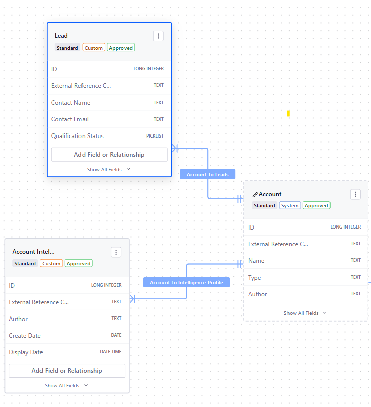
✅ 検証： Control Panel → Objects で、両方の定義が公開されていること、AccountIntelligenceProfile に 3 つの Integer フィールドと 0–100 のバリデーションがあること、Account への両方のリレーションシップが存在すること、そして Account に numberOfLeads Aggregation フィールドが追加されていることを確認します。実際のデータは次の演習で投入します。
2.3 — ターゲットアカウントのデータセットを読み込む
🎯 それぞれ分類とスコアリングプロファイルを持つ、実在しそうなターゲットアカウント 6 件。これにより、以降のすべての演習（4.3 のランキングページ、6.2 のスコア自動化、8.1 の Digital Sales Room）が、全員同じデータで動作します。
🧩 manage-objects（Headless API によるエントリー作成）
📎 REQ-22 — データが投入された Target Account Intelligence Database。
データセットは context-source/target-accounts.csv に含まれています。
| accountName | sector | size | priorityTier | fitScore | valueScore | combinedOpportunityScore |
|---|---|---|---|---|---|---|
| Novacorp | logistics | 8500 | strategic | 92 | 90 | 83 |
| Solstice Manufacturing | manufacturing | 2400 | key | 78 | 70 | 55 |
| Alderbrook Manufacturing | manufacturing | 3200 | key | 85 | 60 | 51 |
| Norrland Foods | foodDistribution | 1900 | key | 80 | 55 | 44 |
| Helix Retail Group | retail | 12000 | standard | 55 | 75 | 41 |
| Brightwater Hospitality | hospitality | 600 | standard | 40 | 30 | 12 |
読み方：combinedOpportunityScore には、「アカウントスコアリングのストーリー」の計算式を使い、リードがまだない前提（つまり単に round(fitScore × valueScore / 100)）で計算した値がすでに入っています。現時点ではこれらの値は単なるデータです。演習 6.2 で、Intent ボーナスを含めてプラットフォームに計算させます。Helix Retail Group に注目してください。大企業（Value が高い）ですが、Aurelis との適合度が低い（Fit が低い）ため、規模は小さくても適合度の高いアカウントより下位になります。これこそが両方の軸を組み合わせる意義です。
💬 プロンプト：
Load context-source/target-accounts.csv into the platform. For each row,
create (or update, if it already exists) an Account with that name, sector,
size and priorityTier, and exactly one AccountIntelligenceProfile linked to
it, carrying fitScore, valueScore and combinedOpportunityScore as given — do
not recompute them. Give every Account and profile a readable external
reference code derived from the account name (e.g. novacorp,
novacorp-profile) so re-running this is idempotent. Don't create any Lead:
every account must start with numberOfLeads = 0.
✅ 検証：
GET /o/headless-admin-user/v1.0/accountsが 6 件のアカウントを返し、sector、size、priorityTierに値が入っていること。GET /o/c/accountintelligenceprofilesがアカウントごとに 1 件、ちょうど 6 件のプロファイルを返し、表のとおりのスコアが入っていること。- 各アカウントが
"numberOfLeads": "0"を返すこと。
2.4 — 有望なリードを通知する
🎯 Lead が作成され、かつ有望（qualified）と判定されたときに、Liferay のアプリ内通知（メールではなく通知ベル）を送信する Object Action。
🧩 manage-object-logic
📎 REQ-43 — ミーティングやリードが作成された時点で、営業担当者に評価（クオリフィケーション）のコンテキストを引き渡す。
💬 プロンプト：
Add an Object Action on Lead, triggered onAfterAdd, that notifies the
salesperson when an entry is created. Use an in-app Liferay notification
(a User Notification template, delivered to the notifications bell) — not
an email. Send it to my own admin account, standing in for the salesperson,
and include the lead's contact name and qualification status in the message.
Leave the condition expression empty at first so I can see it fire on every
write, then help me tighten it to only fire when qualificationStatus is
qualified.
📸 スクリーンショット： Lead の Object Action と Notification テンプレートが作成された状態。


✅ 検証： Lead を qualificationStatus が unqualified の状態で作成し（通知は発生しない）、次に qualified のものを作成します（上部バーのベルアイコンの下に新しい通知が表示され、フィールドが正しく埋め込まれている — [%TOKEN%] がそのまま表示されていないこと）。
これらを作成する最も簡単な方法は、Claude に依頼することです。
Create two test Leads through the Lead API, both linked to the Brightwater
Hospitality account loaded earlier, with a made-up contact name and
company: the first with qualificationStatus unqualified, the second with
qualificationStatus qualified. Show me the response of each call.
📖 リードを最もスコアの低いアカウントである Brightwater Hospitality に紐づけることで、アカウントを手作業で作成する必要がなくなり、また 2 件のリードが後でランキングを変えることもありません。演習 6.2 で Intent ボーナスが加わっても、そのスコアは 12 から 14 に上がるだけです。
レベル 3 — 編集コンテンツ（CMS、CMP）
3.1 — 4 つの CMS Spaces と 4 つの Content Structures
🎯 対象者ごとに Space と Content Structure を 1 つずつ作成します：Product Content、Customer Documentation、Partner Portal、White Papers。context-source/ にあるすべてのドキュメントを、実際のエントリーとしてインポートします。
🧩 manage-cms 🆕
📎 REQ-08–REQ-11（CMS、再利用可能な構造、リッチな編集、DAM）、REQ-14（翻訳）。
📋 ソースフォルダー — インポートの前に実際のファイル数を確認してください。以下の数値を前提にしないでください。
context-source/products/（約 5 ファイル）→ Product Contentcontext-source/customer-documentation/（約 10 ファイル）→ Customer Documentationcontext-source/partner-documentation/（約 10 ファイル）→ Partner Portal（必ずこの名前にしてください — 演習 7.1 がこの名前で参照します）context-source/white-papers/（3 ファイル、Novacorp/Alderbrook/Norrland）→ White Papers
💬 プロンプト：
Using manage-cms, read every file under context-source/products/,
context-source/customer-documentation/, context-source/partner-documentation/,
and context-source/white-papers/. For each of the four folders, design one
Content Structure whose fields actually fit that folder's content, create a
Space named appropriately for its audience (name the partner one 'Partner
Portal'), connect each Space to [site], and import every document in that
folder as a real entry using its own content. Don't skip any document, and
don't force all four folders into one shared structure.
Add a documentType Picklist on the Customer/Partner Documentation structures
to capture sub-genre (user guide, release notes, SLA handbook, certification,
technical manual, etc.) instead of splitting into a structure per sub-genre.
Model minimumPartnerTier and any account-scoping-looking field as plain data
only — no Role, permission grant, or scoping mechanism yet. That comes
later.
Access expectations: don't open anything to Guest in this exercise. Later
exercises open exactly what must be public: the White Papers entries and
the Product Content entries. Customer Documentation and Partner
Portal must never become readable anonymously. If the import leaves Guest
VIEW on any entry or folder, tell me rather than leaving it silently.
⚠️ この演習ではページや Collection Display を作成しないでください — それはレベル 4 の役割です。ここで使い捨てのページを作っても、その手順を重複させるだけで何のメリットもありません。
📸 スクリーンショット： 4 つの CMS スペースが作成され、Content Structures とコンテンツも作成されている状態。

✅ 検証： 4 つの Space すべてについて、GET .../asset-libraries/{spaceERC}/connected-sites が対象サイトを返すこと。GET /o/c/<pluralLabel>/scopes/{spaceScopeId} が想定どおりの件数のエントリーを返し、すべて status: approved であること。
⚠️ CMS スペースや Content Structures の名前は、スクリーンショットと異なる場合があります。 この演習では、AI エージェントがこのワークスペースに含まれるコンテンツから構造を推測することを前提としています。 そのため、ある程度のランダム性が生じますが、これはまったく想定どおりです。隣に誰かが座っていれば、その人の画面をのぞいて比べてみてください。
💡 この演習のねらい： ソースドキュメントは、レンダリングされた形でしか存在しない構造化コンテンツです。テンプレートはあっても、その背後にあるデータモデルはありません。これは、ソースデータが手元にない既存 Web サイトからの移行と同じ状況です。ここでのポイントは、LLM がそのレンダリング済みコンテンツを読み取り、背後にある構造を推測し、Liferay CMS のようなターゲットシステムに読み込めるようコンテンツを再構成できることを示すことです。上のプロンプトは、あえて構造をエージェントに任せています。実際のプロジェクトでは、ターゲットの構造を網羅的に記述したり、後でコンテンツをフィルタリングや仕分けするために切り出す必要がある特定のフィールドだけを指定したりと、より具体的に指示することができます。
3.2 — CMS 管理 GUI を見て回る
🎯 実際の作成者が日々使うコンテンツライフサイクルを一通り体験します: 下書き、公開、バージョン履歴、公開予約、ローカライズ。あえて GUI のみで行います。スキルも API も使いません。
📎 REQ-08–REQ-21 全体（ガバナンス、翻訳）。
📋 手順：
- CMS を開きます。Global Menu → CMS → Contents。
- 製品を含む CMS Space を特定します。
- 製品を 1 つ編集します。たとえば Aurelis GridMax です。
- 製品の一覧に戻り、編集した製品のコンテキストメニューから View history を選択します。
- 以前のバージョンを復元します（以前のバージョンは、コンテンツの新たなバージョンとして復元されます）。
- もう一度いずれかの製品を編集し、右側のメニューで Schedule セクションを確認します。ここでは、そのコンテンツをいつ表示するか、またはいつ期限切れにするかを指定できます。
- 製品一覧に戻り、今度は翻訳のコンテキストメニューを使います。Liferay CMS には、コンテンツの翻訳を支援する GUI が用意されています。他の言語に翻訳できなくても心配はいりません。まもなく AI Hub に手伝ってもらえるようになります！
✅ 検証: 公開済みバージョンが 2 つ以上あり、ロールバックを実演したエントリーが 1 つ。将来の公開日が予約されたエントリーが 1 つ。製品シートで Translate 画面を開いていること（この段階では 2 つ目のロケールは任意です）。
3.3 — CKEditor5 のネイティブ AI アクション
🎯 AI Hub のネイティブな CKEditor5 AI メニューを使い、要約、対象読者に合わせた書き換え、トーンのバリエーション作成を行います — プラグインもカスタムコードも不要です。
🧩 AI Hub との接続には manage-ai-hub 🆕（下記の前提条件）。編集作業自体は手動です。
📎 REQ-33 — AI による下書き生成、タイトル・要約、対象読者への適応、書き換え、キャンペーンのバリエーション。
📋 前提条件 — AI Hub を接続する（このパスでは初回）：
- Control Panel → Instance Settings → Feature Flags → Release → AI Hub (LPD-62272) を有効にします。
- AI Hub で: Configurations → Environment URL を演習 0.2 の ngrok URL（
localhostではありません）に設定 → Save → 生成された Client ID / Client Secret をコピーします。 - DXP に戻り：Control Panel → Instance Settings → AI Hub → Client ID/Secret を貼り付け、Service URL に
https://ai.hub.liferay.comを設定 → Save。
📸 スクリーンショット： AI Hub の Configurations 画面と DXP の AI Hub 接続画面。どちらも接続が保存された状態。

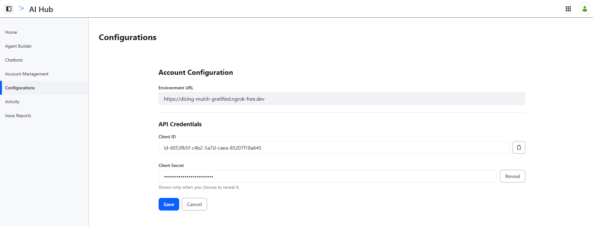
✅ 検証： 正しく動作していることを確認するには、CMS で利用できるようになった チャットボットに Hi! と話しかけてみてください。
📋 CMS で、3.1 で作成した製品エントリーのいずれかを選び、段落を選択して CKEditor5 の AI メニューを使います。
- リッチな本文の要約を生成します。
- 段落を技術者以外の読者向けに書き換えます（例：設備エンジニアではなく住宅所有者向け）。
- 段落の地域・トーンのバリエーションを作成します（言語の翻訳ではなく、言い回しの調整です）。
3.4 — ホワイトペーパー制作のための CMP キャンペーンを立ち上げる
🎯 White Papers CMS Space にそれぞれスコープされた 2 人の新規ユーザー（Elena Ruiz、Marcus Chen）と、作成者ごとに期日付きのタスクを 1 つずつ持つ CMP キャンペーン（"New White Papers"）。
🧩 キャンペーンには manage-cmp-campaigns 🆕。ユーザーとロールは MCP/REST で直接作成します。
📎 大規模なコンテンツガバナンス — ホワイトペーパーの担当割り当て・期日のライフサイクルは、CMS の下書き・公開ワークフローとは別のものです。
📋 前提条件 — CMP を有効化する（ライセンス制のアドオン）：
- Liferay マーケットプレイスで CMP の
.lpkgをダウンロードし、アクティベーションキーを作成します。 - アクティベーションキーをデプロイします
.lpkgをデプロイします
次のように表示されるはずです。
2026-09-15 12:13:26.406 INFO [com.liferay.portal.kernel.deploy.auto.AutoDeployScanner][AutoDeployDir:274] Processing activation-key-content-marketing-platform-1-desktop-mj58ha2.xml
2026-09-15 12:13:32.391 INFO [fileinstall-directory-watcher][b:-1] Content Marketing Platform license validation passed
2026-09-15 12:13:32.392 INFO [fileinstall-directory-watcher][b:-1] License registered for Content Marketing Platform
2026-09-15 12:14:11.547 INFO [com.liferay.portal.kernel.deploy.auto.AutoDeployScanner][AutoDeployDir:274] Processing Liferay Content Marketing Platform.lpkg
2026-09-15 12:14:21.131 INFO [Start Level: Equinox Container: d5e96260-3dbf-4406-800d-a05f76184048][BundleStartStopLogger:66] STARTED com.liferay.headless.cmp.api_2.2.0 [1560]
2026-09-15 12:14:21.135 INFO [Start Level: Equinox Container: d5e96260-3dbf-4406-800d-a05f76184048][BundleStartStopLogger:66] STARTED Liferay Content Marketing Platform - API_26.3.0 [1559]
2026-09-15 12:14:21.312 INFO [fileinstall-directory-watcher][BundleStartStopLogger:66] STARTED com.liferay.site.initializer.cmp_1.0.10 [1565]
2026-09-15 12:14:21.330 INFO [fileinstall-directory-watcher][BundleStartStopLogger:66] STARTED com.liferay.site.cmp.site.initializer_1.0.12 [1564]
2026-09-15 12:14:21.749 INFO [fileinstall-directory-watcher][BundleStartStopLogger:66] STARTED com.liferay.headless.cmp.impl_1.0.8 [1563]
2026-09-15 12:14:22.017 INFO [Start Level: Equinox Container: d5e96260-3dbf-4406-800d-a05f76184048][BundleStartStopLogger:66] STARTED Liferay Content Marketing Platform - Impl_26.3.0 [1561]
2026-09-15 12:14:22.169 INFO [fileinstall-directory-watcher][BundleStartStopLogger:66] STARTED com.liferay.headless.cmp.client_1.0.6 [1562]
問題がなければ、Control Panel → Instance Settings → Feature Flags に移動し、CMP (LPD-58677) を有効にします。
⚠️ CMP が正しく有効化されなかった場合は、CMP のフィーチャーフラグを有効にしないでください。
💬 プロンプト：
Using the Liferay MCP server (or the REST API directly if MCP isn't
available), set up a campaign for a new white paper production effort in
CMP, using the manage-cmp-campaigns skill.
First, create two new users: Elena Ruiz (elena.ruiz@aurelis.com), who will
author the ACME Corp white paper, and Marcus Chen (marcus.chen@aurelis.com),
who will author the RayLife Ltd white paper. Both users must be active and
able to sign in. Make each a member of the White Papers Space with a role
that lets them add and edit white paper entries there, but not delete or
publish them, and grants nothing in the other Spaces or in the Control
Panel. Each must be able to see their own CMP task. Before calling it done,
list exactly what the role grants.
Then create a CMP campaign ('New White Papers') for two white papers: one
for ACME Corp, one for RayLife Ltd. Add one task per white paper, each
assigned to the corresponding author, with a due date.
📸 スクリーンショット： CMP キャンペーンボードに両方のタスクが表示され、担当者と期日が見える状態。
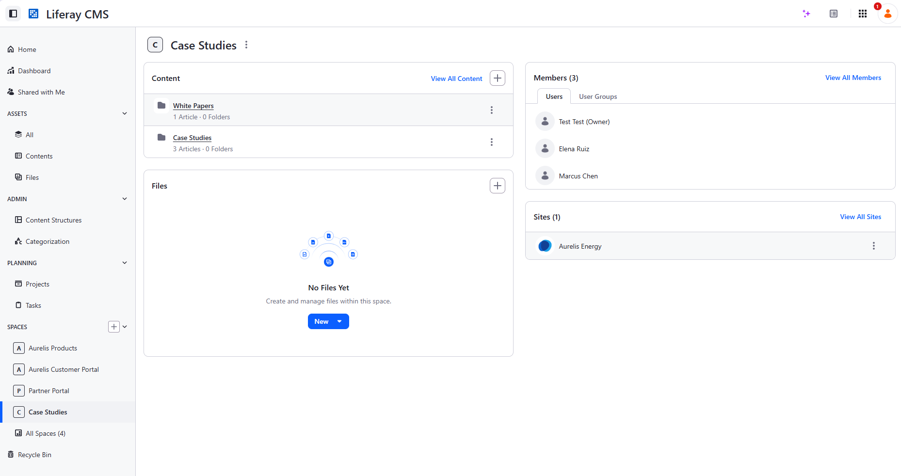

✅ 検証： 各ユーザーのアカウントを GET し、付与されたロールの権限が要求どおりで、それ以上広くないことを確認します。キャンペーンを開き、両方のタスクに正しい担当者と期日が表示されていることを確認します。
アイデア： Liferay MCP Server を使って CMS を操作する AI ペルソナを作成し、CMP とその API を使って彼らの作業を調整してみてはいかがでしょうか？
レベル 4 — ページ構成 & アカウント管理（Page Builder、Data Sets、LDP）
4.1 — ゲート付きホワイトペーパーのファネル
🎯 一覧ページ → ゲート付きエントリー（リード獲得フォーム）→ 送信時にリダイレクト → 全文 → Liferay Data Platform でトラッキングされたイベント。
🧩 manage-form-containers 🆕、manage-pages、scaffold-fragment、manage-analytics 🆕
📎 標準的なゲート付きコンテンツのパターン。MutationObserver → Analytics.track() ラッパーによる REQ-25（行動シグナルの取得）。
📋 前提条件 — Liferay Data Platform（Analytics Cloud）を接続する：
- LDP で、このインスタンスを新しい Data Source として追加します。
- 生成されたトークンをコピーします。
- Liferay DXP で、Control Panel → Instance Settings → Analytics Cloud → トークンを貼り付け → Save。
- LDP で Aurelis サイトを選択し、トラッキング対象にします。
- LDP 上の Liferay データソースの名前を、汎用的でない名前に変更します。
⚠️ このワークスペースは、このセッションの参加者全員で共有されています。 全員の Analytics.track() 呼び出しが同じイベント名をそのまま送信すると、演習 4.2 のレポートは全員のダウンロードが混在した読めないものになります。下のプロンプトでは、エージェントが最初にあなた自身のイニシャル（3 文字）を尋ね、それをイベント名の末尾に付けます — この手順を飛ばさず、演習 4.2 のために自分のサフィックス付きイベント名を覚えておいてください。自分を識別できる 3 文字を選びます：名の頭文字 + 姓の最初の 2 文字（Fabian Bouché → FBO）、または 3 つの名前で呼ばれている場合は各名前の頭文字 1 文字ずつ（Andrew Lloyd Webber → ALW）。自分のものだとわかる 3 文字であれば、他の組み合わせでも構いません。
💬 プロンプト：
Using manage-pages, manage-form-containers and manage-analytics, build the Novacorp
white paper's full funnel, bound to the WhitePaper Content Structure, entirely
through the site-initializer tree.
Before doing anything else, ask me for my three-letter initials and use them
to suffix every custom event name below (e.g. whitePaperDownloaded_ABC for
initials ABC) — this workspace is shared across every participant, so a
bare, unsuffixed event name would collide with everyone else's.
- A "White Papers" listing page with one card per white paper, each linking
into its own entry.
- That entry's default page: a short teaser plus a lead-capture form (name,
email, company, role) writing into the existing Lead object, tagged with
source = 'whitepaper-novacorp'.
- A second, non-default page for the same entry: the full write-up.
- Once the form is submitted, take the visitor straight to that full write-up
page and record the visit as a tracked event, fired with a real
`Analytics.track()` call from the page, using my initials-suffixed event
name — not just a reachable page. The Liferay Analytics Cloud SDK is
already loaded site-wide once the prerequisite above is connected; don't
invent a separate tracking mechanism or fire the event from anywhere other
than the visitor's own browser session.
- Access expectations. Guest must be able to browse the listing, read an
entry, and submit the form; nothing beyond that should be readable or
writable anonymously. Concretely:
- Guest gets VIEW on the WhitePaper entries and on the folders that hold
them (folders carry their own permissions), plus DOWNLOAD_FILE if an
entry renders a file or image.
- Guest gets ADD_OBJECT_ENTRY on Lead, and never VIEW: submitted names
and emails must not be readable anonymously.
- The form must not depend on a picklist fetched over REST (Guest can't
read picklists): ship any options in the markup.
- The gate is a user-experience gate, not a security boundary: the
write-up URL stays reachable by Guest. Say so in your summary rather
than presenting it as protected.
Verify every point as an unauthenticated visitor (curl with no
credentials, then a fresh browser context), never with admin credentials,
and show me that an anonymous GET on the Lead collection returns no
entries.
📸 スクリーンショット： 一覧ページ、リード獲得フォームのあるゲート付き（デフォルト）エントリーページ、全文ページ、そして Liferay Data Platform に表示されたトラッキング済みイベント。
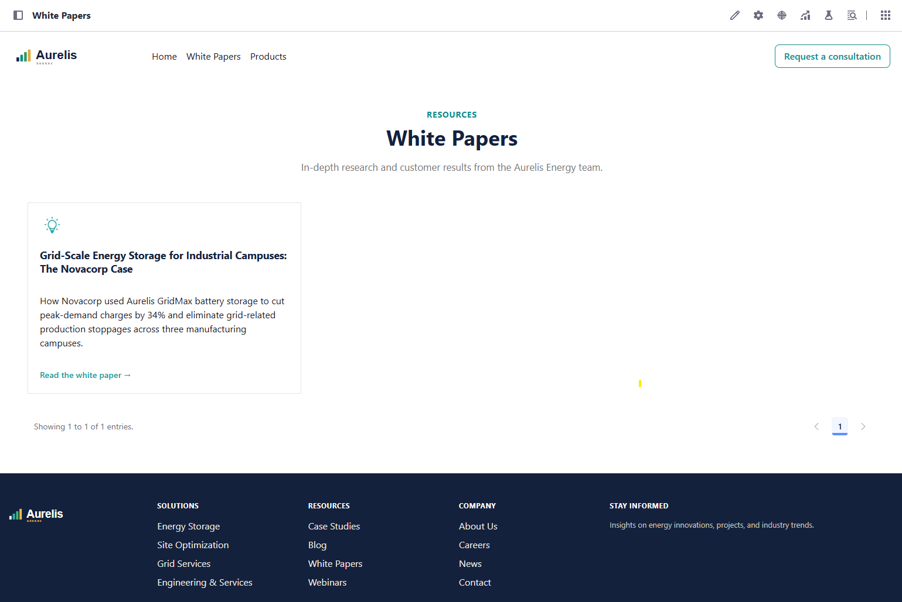
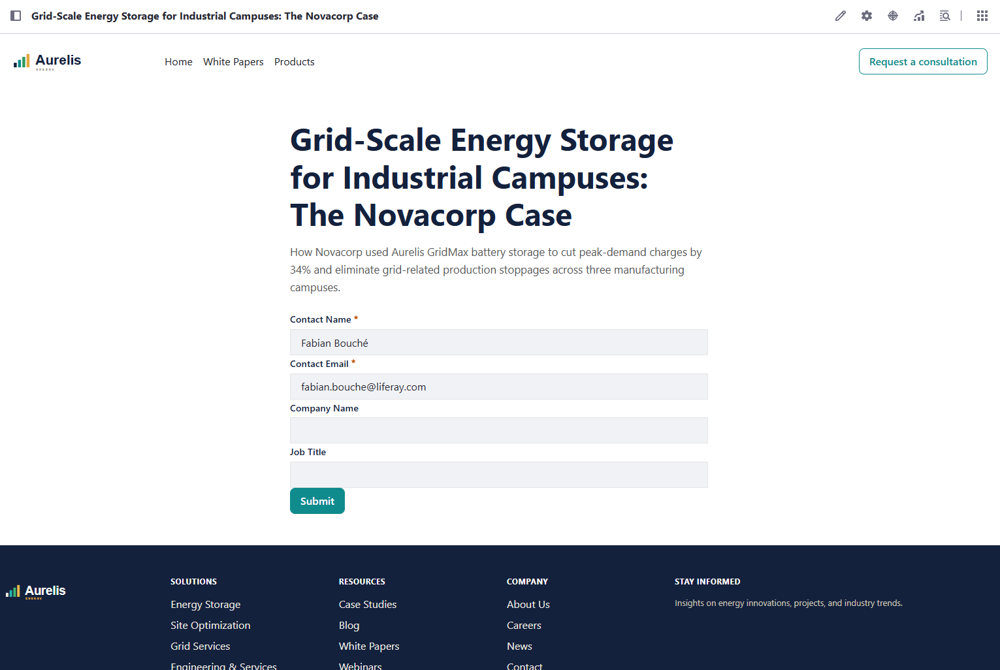

✅ 検証 — 管理者セッションではなく、実際の匿名訪問者として： 一覧 → Novacorp をクリック → ゲート付きテンプレートに遷移することを確認 → フォームを送信 → 実際の Lead エントリーが正しい source タグ付きで作成されたことを確認 → リダイレクト先が同じエントリーの全文であることを確認 → イベントが実際に Liferay Data Platform に表示されることを確認します。
また、Chrome DevTools → Network タブを開き、"Preserve log" を有効にし（有効にしないと単純なリダイレクトでパネルがクリアされます）、Analytics Cloud のリクエストドメインでフィルターして、Analytics.track() の呼び出しが想定どおりのイベントペイロードを持つ実際の送信リクエストとして発行されていることを確認します。Analytics.track() はストア・アンド・フォワード方式です — イベントを直ちに localStorage にキューイングし、SDK が独自の約 2 秒間隔でそれを送出します。そのため、リダイレクトが発生する前にリクエストが出ることは期待せず、全文ページが読み込まれてから数秒以内に探してください。いずれにしても LDP ダッシュボードだけに頼らないでください。ダッシュボードへの反映が遅れていても、そもそもブラウザーから呼び出しが発行されたかどうかはわからないからです。
📸 スクリーンショット： LDP に送信されたカスタムイベント。
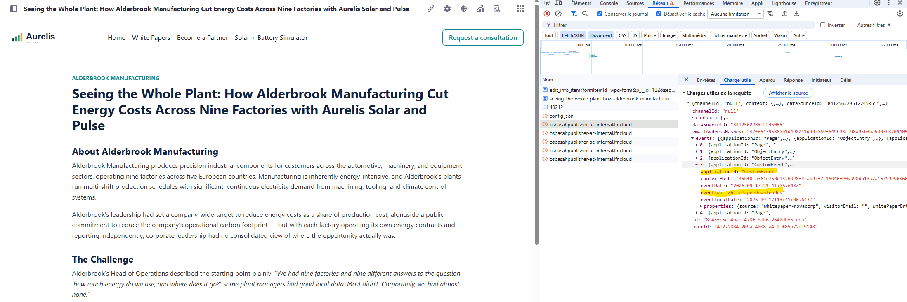
⚠️ これらのページのレンダリング方法について、エージェントに厳密なガイドラインを与えていないため、ルック＆フィールはスクリーンショットと多少異なる可能性があります。
4.2 — Liferay Data Platform でホワイトペーパーのダウンロードを監視する
🎯 あなた自身の whitePaperDownloaded_<your initials> イベントを、実際にダウンロードされたホワイトペーパーごとに分けてトラッキングする、LDP の保存済み Event Analysis。これは演習 4.1 でトラッキングしたイベントの「だから何？」にあたる後半部分です。イベントは取得するだけでは意味がなく、誰かが集計結果を見られるようになって初めて価値を生みます。
🧩 構築するものはありません — Liferay Data Platform の GUI 操作のみです。manage-analytics 🆕 を使うと、イベントと Event Analysis の確認に役立ちます。
📎 REQ-25（行動シグナルの取得）。
⚠️ 素の whitePaperDownloaded ではなく、演習 4.1 で作成した、自分のイニシャル付きのイベント名を分析してください — このワークスペースは共有されており、他の参加者も全員、同時にそれぞれのサフィックス付きイベントを送信しています。
📋 手順（すべて LDP 上で — スキルは使いません）：
- まず、少なくとも 1 件の実際のイベントを発生させます — 訪問者として演習 4.1 のファネル全体（一覧 → フォーム → リダイレクト → 全文）を自分でたどり、分析対象となる実際の
whitePaperDownloaded_<your initials>イベントを作ります。空のレポートでは、トラッキングが正しく接続されているかどうかは何も証明できません。 - LDP で：Events → Event Analysis。
- Analyze：
whitePaperDownloaded_<your initials>。Breakdown：pageTitle（Event）を追加します — これにより、単なる合計ではなく、どのホワイトペーパーの全文に実際に到達したかをレポートで区別できます。 - Save Analysis を実行し、名前にもイニシャルを付けます（例："White paper download - ABC"）— 保存済みの分析も、他のすべてと同様にワークスペース全体で共有されます。
📸 スクリーンショット： 保存済み Event Analysis の設定。

- 期間を Last 24 hours に設定し、表に実際の
pageTitle行が表示されること（"No Results" ではないこと）を確認してから、Download Reports を実行し、エクスポートされた Event Analysis Report を開きます。
📸 スクリーンショット： ダウンロードした Event Analysis Report。実際の、空でない内訳が表示されている状態。
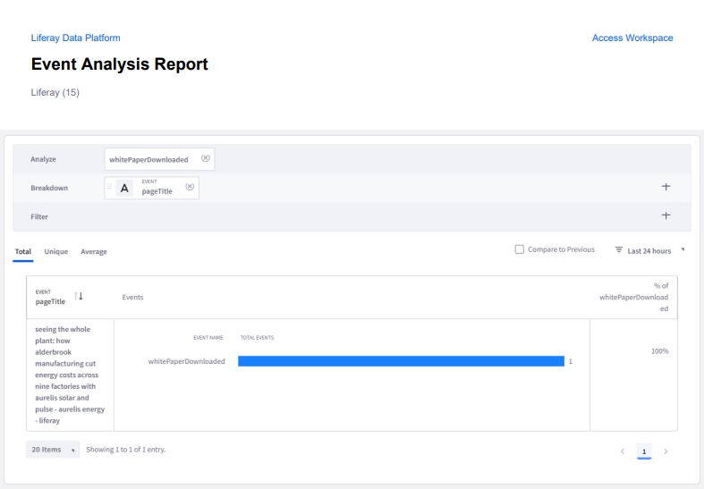
✅ 検証： レポートの pageTitle 行が実際にダウンロードしたホワイトペーパーと一致し、Total Events が 1 以上であること。そして、LDP のライブ画面だけでなく、ダウンロードしたレポートファイル自体にも同じ行が反映されていること。
4.3 — Data Set を使った Account Intelligence ページ
🎯 AccountIntelligenceProfile エントリーを combinedOpportunityScore でソートして表示するページ。各行から、対応するアカウントの小さな React アプリにリンクします。
🧩 manage-pages、manage-data-sets 🆕、scaffold-client-extension、react-custom-elements
📎 REQ-27 — 合算した Opportunity Score でアカウントの優先順位を付ける。
📖 この時点でのスコアの出どころ。 ソートに使う combinedOpportunityScore の値は、演習 2.3 でデータセットとともに読み込んだものです。まだ何も計算していないため、今 fitScore を編集しても合算スコアは変わりません。この計算は演習 6.2 で自動化します。このページで想定される順序：Novacorp (83)、Solstice Manufacturing (55)、Alderbrook Manufacturing (51)、Norrland Foods (44)、Helix Retail Group (41)、Brightwater Hospitality (12)。
⚠️ Data Set のソースには AccountIntelligenceProfile を使い、決して Account を使わないでください — Account 自体の Headless モジュールは、ハードコードされた少数のフィールドでのソートしかサポートしておらず、カスタムフィールドや関連フィールドでのソートは拒否されます。また、Account は Display Page Template にも Form Container にも対応していないため、行アクションのリンク先は React アプリを配置した通常の Content Page になります。
⚠️ 2026.Q3.6 以降が必要です（LPD-102157 の修正）。 Data Set フラグメントは、外部参照コード（ERC）で Data Set を参照します。これはサイトイニシャライザーの page-definition.json から直接行われます。2026.Q3.2 ではホットフィックスが必要でした。
💬 プロンプト：
Create a Data Set of Account Intelligence Profiles, sorted by combined
Opportunity Score (highest first, and sortable by users), showing each
profile's account name, with a row action that opens /account-detail for
that profile.
Then add an 'Account Intelligence' page to the site initializer with this
Data Set on it. Deploy it and confirm the page renders real rows without
anyone touching the Page Editor.
Separately, build the /account-detail page: a small React customElement
Client Extension that reads profileId from the URL, fetches that
AccountIntelligenceProfile entry, then follows its own relationship field to
fetch the related Account — two Headless calls — and renders both live.
Access expectations: both pages are for Aurelis sales staff only. Create a
Regular Role 'Aurelis Sales' if it doesn't exist, with VIEW on
AccountIntelligenceProfile entries and on Accounts (company-wide), and an
active test user holding only that role (alex.moreau@aurelis.com). Remove
Guest VIEW from both pages in their page.json (an empty actionIds for
Guest), and give the Aurelis Sales role VIEW on them. Verify three ways: as
alex.moreau the page shows the six rows and /account-detail resolves; as
Guest both pages answer 404; as a signed-in user without the role the pages
are not accessible either. Don't verify as admin only.
📸 スクリーンショット： スコアの降順でソートされた、公開中の "Account Intelligence" ページ。Page Editor では、フラグメントで Data Set がすでに選択されている状態（誰も手動で選択していない）。

✅ 検証： layouts/<page>/page-definition.json を開き、フラグメントの itemSelector が ERC で Data Set を指定していることを確認します。Page Editor で、誰も選択していないのにフラグメントにその Data Set が選択済みとして表示されていることを確認します。公開ページを読み込み、スコア列のヘッダーをクリックして実際に並べ替えが行われること、またアカウント名の列が逆方向のリレーションシップで解決されることを確認します。行アクションを実行し、/account-detail がプロファイルとそれに関連するアカウントの両方をライブで解決することを確認します。
4.4 — アカウント詳細アプリを編集可能にする
🎯 演習 4.3 の React アプリを拡張し、スタッフが同じページ上でアカウントの分類フィールドを直接編集できるようにします。
🧩 scaffold-client-extension、react-custom-elements
📎 REQ-22 — これが Target Account Intelligence Database を実際に維持するための仕組みです。
💬 プロンプト：
Extend the /account-detail React customElement built earlier so it
can also update the Account it displays. Add editable fields for sector,
size, country, and priorityTier, a Save button that PATCHes the change to
Account's own Headless API (/o/headless-admin-user/v1.0/accounts/{id}), and
re-fetch the entry afterward so the page reflects what was actually
persisted.
Access expectations: being signed in is not enough to edit. Grant the
Aurelis Sales role (created earlier) UPDATE on Accounts, and let the server-side
permission decide: hide the editor for users who can't update, but never
rely on the hidden UI as the protection. Verify as alex.moreau (the save
persists), as a signed-in user without the role (the PATCH is rejected), and
anonymously (401/403, never a silent success).
📸 スクリーンショット： 編集モードのアカウント詳細ページ。

✅ 検証： フィールドを変更して保存し、再読み込みして、新しい値が実際に保存されていることを確認します。同じ PATCH への未認証リクエストが、黙って成功するのではなく 401/403 を返すことを確認します。
レベル 5 — 訪問者とのインタラクション（Form Containers、Objects、外部連携）
5.1 — 企業情報をリアルタイムに検索する「Become an Aurelis Partner」フォーム
🎯 PartnerApplication エントリーを作成する公開 Form Container。フランスの公開企業登録簿のデータで事前入力されます。
🧩 manage-form-containers 🆕
📎 REQ-55 — パートナー登録と申請の受付。
💬 プロンプト：
Build a public Form Container bound to a new PartnerApplication object:
company registration number, company name, country, sector, message. When
the registration number is entered, call France's public company registry
(GET https://recherche-entreprises.api.gouv.fr/search?q=<number>) and
prefill name/sector/country from the match. Keep every prefilled field
editable — nothing submits automatically from the lookup.
Access expectations: the page and the form are public. Guest gets
ADD_OBJECT_ENTRY on PartnerApplication and nothing else: applications
contain company details and must be readable only by the Aurelis Sales role
(created earlier). Without ADD_OBJECT_ENTRY the Form Container renders nothing
for a visitor, with no error. If sector or country is a picklist, ship its
options in the markup: Guest can't read picklists over REST. Verify the
submission as an unauthenticated visitor, and show me that an anonymous GET
on the PartnerApplication collection returns no entries.
📸 スクリーンショット: 検索が成功した後のフォーム。事前入力されつつも編集可能なフィールドが表示されている状態。
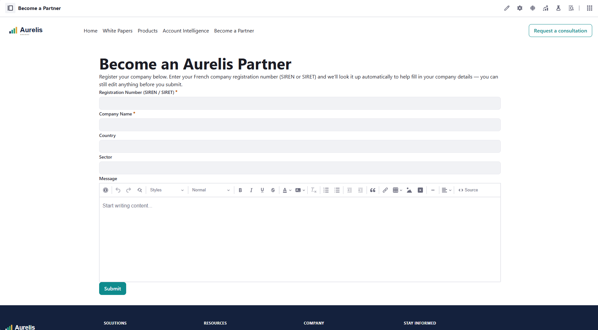
✅ 検証: 789 001 377（Liferay France 自身の SIREN）で送信し、検索が実行されて名前・業種・国が事前入力されることを確認します。次に、一致する結果がない番号で再度送信し、すべてのフィールドを手動で入力できることを確認します。どちらの場合も実際の PartnerApplication エントリーが作成されること、また事前入力されたフィールドが送信前に編集可能であることを確認します。
⚠️ 対象はフランスで登録された企業（SIREN）のみです。CORS が許可されていることは確認済みのため、サーバー側のプロキシは不要です。登録簿はサーバー側で 7 req/s のレート制限がありますが、入力速度であれば問題ありません。
レベル 6 — カスタム開発: Client Extensions（Client Extensions、Object Actions、Glowroot）
最も内容の濃いレベルです。Aurelis 向けに特定されたカスタム開発の中核部分にあたります。
6.1 — 太陽光 + 蓄電池設置シミュレーター
🎯 互いに独立した 2 つの customElement クライアント拡張（入力ウィジェットと結果ウィジェット）。両者は Liferay.fire()/Liferay.on() のみを介して連携します。
🧩 scaffold-client-extension（×2。「Messaging Between Widgets: Liferay.fire / Liferay.on」セクションを含む）。
📎 REQ-63〜REQ-66 — 住所、利用可能な面積、時間帯別の消費プロファイルから、実際の Open-Meteo 気象データを用いて太陽光・蓄電池の容量を算出。
💬 プロンプト：
Build the Aurelis Solar + Battery Installation Simulator as specified in the
Brief (section "Solar Panel + Battery Installation Simulator", Lot 1) — two
independent customElement Client Extensions on the same page, coupled only
through Liferay.fire()/Liferay.on(), never a shared DOM reference, module, or
config file.
(1) aurelis-simulator-inputs. Collects exactly three inputs: address
(geocoded via Open-Meteo's geocoding endpoint), usable surface area in m²,
and an hourly consumption profile for a typical day — an editable 24-bar
chart with an adjustable Y-axis scale. On any change, fire
Liferay.fire('aurelisSimulatorInputsChanged', {address, lat, lon, surfaceM2,
hourlyConsumptionKwh: [24 numbers]}) with the full current state.
(2) aurelis-simulator-results. A separate Client Extension subscribing via
Liferay.on('aurelisSimulatorInputsChanged', ...). For a visitor-selected
month (a real 12-month selector):
- Fetch that location's historical solar irradiance for that month from
Open-Meteo's historical archive API.
- Compute hourly solar production from surface area and irradiance.
- Simulate the battery: store daytime surplus, discharge it during hours
without sun. Compute and display a recommended battery capacity (kWh),
labeled as this build's own answer to an open question in the Brief.
- Render a 24-bar stacked chart per hour: solar / battery / grid, always
summing to that hour's consumption. Overlay battery state-of-charge (%) as
a line on the same chart.
- Recompute the whole chart whenever the month changes.
Out of scope, name explicitly in the README rather than deciding silently:
no cost/savings estimate (physical simulation only); no
efficiency/orientation/tilt inputs (name whatever fixed assumption is used as
an explicit constant); no geography restriction beyond Open-Meteo's own
coverage.
Inject each Client Extension's JS/CSS from the fragment's own js field
(document.createElement, appended to document.head, guarded by a data-*
marker) — a fragment's html field silently strips <script>/<link> tags.
Cache each (location, month) fetch; don't refetch on every unrelated redraw.
Access expectations: the simulator page is public. Both widgets must work
for an anonymous visitor: they call only Open-Meteo, never a Liferay API.
Verify it in a fresh, signed-out browser context.
📸 スクリーンショット: 手描きの消費プロファイルを入力した入力ウィジェットと、選択した 2 つの異なる月に対する結果ウィジェットの積み上げグラフ。
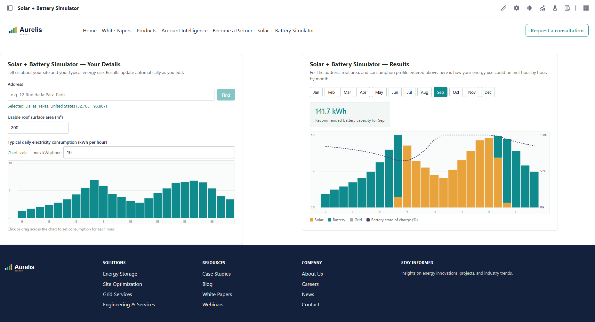
✅ 検証: 実在の住所 + 妥当な面積 + 描いたプロファイル → 結果の棒グラフがすべての時間帯で正しく合計されることを確認します。月を切り替え、構成比が実際に変わることを確認します。結果ウィジェットをページから削除しても入力ウィジェットが単独で動作し続けることを確認します。これが、連携がイベントベースであることの証明になります。
💡 レイアウトの変更: 2 つのウィジェットはデフォルトでは上下に積み重ねて配置されますが、その配置に縛られるわけではありません。イベントを通じてのみ通信しているため、横並びにしたり、任意のグリッドに配置したりできます（例えば左に入力、右に結果）。方法は 2 つあります。
- ページエディターで: 2 つのモジュールを持つ Grid フラグメントをドロップし、各列にウィジェットを 1 つずつドラッグします。手軽ですが、ページは
page-definition.jsonから再構築されるため、次回サイトイニシャライザーを実行すると上書きされます。 - ソースツリーで: エージェントに、ページの
page-definition.jsonをSection → Row → Columnレイアウト（列サイズの合計が 12）に変更し、モバイルでは列を縦に積み重ねるよう依頼します。こうすれば、再プロビジョニングのたびに配置が保持されます。
6.2 — Opportunity Score クライアント拡張
🎯 Fit、Value、Intent に応じて combinedOpportunityScore を最新に保つ objectAction クライアント拡張。リードが入ってきた際には、そのリードを適切なアカウントに紐付け、訪問者の関心がそのアカウントのスコアに実際に反映されるようにします。
🧩 scaffold-client-extension（タイプ objectAction）、setup-oauth
📎 REQ-26（識別された訪問者をその組織に紐付ける）、REQ-27 — Aurelis のスコアリング式は同社独自のビジネスロジックであり、Liferay のネイティブ機能では計算できません。
📖 何が変わるのか。 これまで combinedOpportunityScore は演習 2.3 で読み込んだ単なるデータでした（4.3 の注記を参照）。また、ホワイトペーパーフォーム（4.1）からのリードは会社名を自由テキストとして持つだけで、どのアカウントにも紐付いていませんでした。ここからは、1 つのクライアント拡張が 2 つのトリガーを処理します。
- プロファイルが追加または更新されたとき: そのプロファイルのスコアを再計算します。
- リードが追加されたとき: リードの
companyと名前が一致するアカウントを検索し、リードをそのアカウントに紐付けて（これによりアカウントのnumberOfLeadsが増加します）、そのアカウントのスコアを再計算します。
計算式は「The account scoring story」のものです: min(100, round(fitScore × valueScore / 100 × (1 + min(numberOfLeads, 5) / 10)))。リードがまだ紐付いていない場合はデータセットの値とまったく同じになるため、リードが入ってくるか、誰かが Fit または Value のスコアを変更するまで、ランキングは変わりません。
📖 このクライアント拡張に 2 つの OAuth アプリケーションが必要な理由。 これまで、クライアント拡張は Liferay から送られてきたトークンを使って Liferay を呼び出していました。このトークンは、アクションをトリガーしたユーザーとして動作します。ここでは、リードは通常 匿名 の訪問者がホワイトペーパーフォームを送信することで作成されるため、そのトークンはゲストのものとなり、ゲストはアカウントの読み取りもリードの編集もできません（すべての呼び出しが 403 を返します）。そのため、クライアント拡張には独自のアイデンティティを持たせます。
| OAuth アプリケーション | タイプ | 用途 |
|---|---|---|
ユーザーエージェント（すべての objectAction で既に必須） |
oAuthApplicationUserAgent |
Liferay がマイクロサービスを呼び出し、トリガーしたユーザーを識別できるようにする |
| ヘッドレスサーバー | oAuthApplicationHeadlessServer |
マイクロサービス自身のサービスアカウント。Liferay へのすべてのコールバックで client_credentials とともに使用 |
ヘッドレスサーバーのサービスアカウントは Administrator です。実行できる操作を制限するのはスコープリストだけなので、できる限り狭く保ってください。
⚠️ マイクロサービスは、認証情報をソースコードや設定に保持しません。 デプロイ時に、DXP はヘッドレスサーバーのクライアント ID とシークレットを bundles/routes/default/<project-name>/ 配下にファイルとして書き出します（Liferay Cloud では /etc/liferay/lxc/ext-init-metadata 配下）。再デプロイのたびに両方が変わり、それ以前に発行されたトークンは 401 を受け取ります。そのため、マイクロサービスはトークンを要求するたびにこれらのファイルを読み込み、401 を受け取った場合は再度読み込んで 1 回だけリトライします。
💬 プロンプト：
Scaffold an objectAction Client Extension (a Node microservice) that keeps
AccountIntelligenceProfile.combinedOpportunityScore up to date:
combinedOpportunityScore =
min(100, round(fitScore * valueScore / 100 * (1 + min(numberOfLeads, 5) / 10)))
where numberOfLeads is the Aggregation field on the profile's Account (it
comes back as a string: parse it).
Attach the same Client Extension to three object actions and tell the
callers apart by objectDefinitionId:
- AccountIntelligenceProfile, onAfterAdd and onAfterUpdate: recompute that
profile's score.
- Lead, onAfterAdd: find the Account whose name exactly matches the Lead's
company (case-insensitive; escape single quotes in the filter). If there's
no match, do nothing. Otherwise link the Lead to that Account, then
recompute that Account's profile score.
Only PATCH a score when the value actually changes, so the write-back
doesn't re-trigger the action in a loop.
Leads are created by anonymous visitors, so don't call back into Liferay
with the inbound token. With setup-oauth, add an
oAuthApplicationHeadlessServer and use client_credentials for every call
back, with only these scopes: c_accountintelligenceprofile.everything,
c_lead.everything, Liferay.Headless.Admin.User.everything.read. Keep the
oAuthApplicationUserAgent the objectAction entry requires.
Read the headless server's client ID and secret from the routes files DXP
writes on deploy, each time a token is requested (never cached at startup,
never copied into the project), and on a 401 re-read them and retry once.
✅ 検証：
- Fit/Value の変更: Helix Retail Group の
fitScoreを 55 から 95 に変更し、combinedOpportunityScoreが 71（95 × 75 / 100、リードなし）になることを確認します。Account Intelligence ページで、Helix が Novacorp に次ぐ 2 位になります。55 に戻し、スコアが 41 に戻ることを確認します。 - Intent: プライベートウィンドウ（匿名）で、演習 4.1 のホワイトペーパーフォームを会社名
Norrland Foodsで送信します。新しいリードが Norrland Foods アカウントに紐付けられ、アカウントが"numberOfLeads": "1"を返し、Norrland のスコアが 44 から 48 になることを確認します。もう一度送信するとスコアは 53 に達し、Norrland が Alderbrook Manufacturing（51）より上位になります。最後に、どのアカウントにも一致しない会社名で送信し、そのリードが未紐付けのままで、スコアが変わらないことを確認します。 - ヘッドレスサーバーが必要な理由: 一時的にマイクロサービスが受信したトークンを使うように変更し、匿名でフォームを再送信して、コールバックが
403で失敗することを確認します。その後、元に戻します。 - スコープ: ヘッドレスサーバーに
Liferay.Headless.Object.everythingだけを与え、すべてのコールバックが403で失敗することを確認します。上記の 3 つのスコープを元に戻し、再び動作することを確認します。 - 認証情報のローテーション: マイクロサービスを再起動せずにクライアント拡張を再デプロイし、別のリードを送信して、引き続き動作することを確認します（マイクロサービスが
401の後に新しい認証情報を読み直したことになります）。
6.3 — リード送信のコストを Glowroot で測定する
🎯 コードを読むのではなく、測定によって 1 つの問いに答えます: 匿名の訪問者がホワイトペーパーフォームを送信したとき、訪問者は次のページを受け取る前に Opportunity Score クライアント拡張（6.2）の処理を待たされるのか？ また、1 件のリードによって合計で何回の呼び出しが発生するのか？
🧩 glowroot-performance 🆕
📎 NFR — 公開ジャーニーのパフォーマンス。6.2 の設計（ループガード、トリガー）を数値で検証します。
📖 リードが入ってきたときに何が起こるか。 1 回のフォーム送信が、次のような連鎖を引き起こします。
- Liferay がリードを保存します。
onAfterAddObject Action がクライアント拡張のマイクロサービスを呼び出します。- マイクロサービスが Liferay を呼び出します: 名前でアカウントを検索し、リードを PATCH して紐付け、
numberOfLeadsを読み取り、プロファイルのスコアを PATCH します。 - これらの PATCH がさらにアクションをトリガーします: リードの
onAfterUpdate、プロファイルのonAfterUpdate。6.2 のガードによって、これらが再度書き込みを行うことは防がれるはずです。
これらの各ステップはブラウザからは見えません。Glowroot は Liferay の JVM 内で動作する APM エージェントで、すべてのリクエストをトランザクションとして、その所要時間、SQL クエリ、外部への HTTP 呼び出しとともに記録します。glowroot-performance スキルは、Glowroot の MCP サーバーを通じてそれらを読み取ります。
📋 前提条件（設定済み）: ワークスペースの setenv ファイルが起動のたびに Glowroot エージェントをアタッチし（演習 0.2 の blade server init でインストール済み）、.mcp.json がその MCP サーバーを http://localhost:4000/o/glowroot/mcp に登録しています。Claude Code から glowroot MCP サーバーの承認を求められた場合は、承認してください。http://localhost:4000/o/glowroot が開けることを確認してください。
💬 プロンプト：
Using glowroot-performance, measure what a single Lead submission costs.
First, in a private window (anonymous), I'll submit the white paper form built
earlier three times with "Norrland Foods" as the company. Tell me when
you're ready, then wait for me to say it's done.
Then, over that time window:
1. Check the CPU regime first and tell me whether the timings are reliable.
2. Find the form submission transaction. Give its duration and say whether
the call to the Opportunity Score microservice (localhost:3101) appears
inside it as a service call. Conclude: does the visitor wait for the
Client Extension, yes or no?
3. List the transactions caused by the microservice calling back into Liferay
(accounts lookup, Lead PATCH, profile PATCH, and anything else), with
count and average duration.
4. Confirm the loop guard built earlier holds: exactly one profile score PATCH per Lead.
5. Count the SQL queries behind one submission, end to end.
Every claim must cite a Glowroot number and a trace id or transaction name,
with the glowrootUrl so I can open it. If a fast transaction left no trace,
lower the slow-trace threshold for that one transaction only, rerun, then put
it back and tell me you did. Don't create instrumentation and don't run
anything that pauses the JVM.
✅ 検証：
- Claude が提示する各
glowrootUrlを開き、Glowroot UI（Transactions → Web、次にトレース）で数値を自分で確認します。 - 「訪問者は待たされるのか？」への答えは、コードが本来どう動くべきかではなく、トレースに基づいている必要があります。マイクロサービスの呼び出しが送信のトレース内に現れる場合、訪問者は送信のたびにそのレイテンシーを負担することになります。何を変更するか（例えば、アクションを非同期にする）を議論してください。
- 3 回の送信でプロファイルのスコアの PATCH は 6 回ではなく 3 回になるはずです。それより多い場合は、ガードが機能していません。
- Claude が低速トレースのしきい値を下げた場合は、Glowroot UI で元の値に戻っていることを確認します。
⚠️ この環境では Glowroot の UI と MCP サーバーには認証がなく、127.0.0.1 でのみリッスンしています。ポート 4000 を ngrok やその他のトンネル経由で公開しないでください。
💡 この演習の先へ: この演習では 1 つの限られた問いに Glowroot を使いますが、同じアプローチは glowroot-performance スキルを通じて、Claude Code からのあらゆるパフォーマンス調査に使えます。このスキルでは次のことができます。
- 低速トレースの読み取り
- 特定のトランザクションのスレッドプロファイルの読み取り（トランザクションの種類と時間帯で絞り込み）
- トランザクションの背後にある SQL クエリの読み取り
- メモリと CPU の使用状況、および JMX メトリクスの読み取り
- Java メソッドへの新しいインストルメンテーションをプログラムで追加し、プロファイリングする
私たちがよく使う手法: トランザクションのサンプルを取得し、そのスレッドプロファイルのスタックからホットスポットを探し、それらのメソッドにインストルメンテーションを追加して、内部で実際に何が起きているかを把握します。
これは、MCP サーバーを公開する Glowroot の改変版に依存しています。非常に新しいもので、2026.Q3 では問題なく動作することが確認されており、現在より広範囲でテストが進められているところです。多少の粗さがあることを想定してください。
レベル 7 — セキュリティと権限、ネイティブの AI Hub チャットボット（AI Hub）
7.1 — ティアに応じてパートナーコンテンツへのアクセスを制限する
🎯 累積的な 3 つの Regular Role（Partner - Bronze/Silver/Gold、Gold ⊇ Silver ⊇ Bronze）。各 PartnerDocumentation エントリーの minimumPartnerTier に応じて、エントリーレベルの View 権限を付与します。
🧩 manage-roles-permissions
📎 REQ-57 — ティア別のパートナー向けイネーブルメントコンテンツ。
📖 Aurelis は設置パートナーを Bronze、Silver、Gold の 3 つのティアで認定しており、ティアが上がるほど Partner Portal でアクセスできる範囲が広がります。例えば Gold パートナーは、機密の製品ロードマップを閲覧できます。演習 3.1 では、パートナー向けドキュメントを minimumPartnerTier 付きの単なるデータとしてインポートしましたが、現時点ではそれを強制する仕組みはありません。この演習では、このフィールドを実際のアクセス制御に変えます。
💡 設計上の判断（決定済み）（元のドキュメントでは未確定のため、プロンプトで決めています）:
- 排他的ではなく累積的 — Gold パートナーは Bronze + Silver + Gold のコンテンツを閲覧できます。
- 「Gold-only section」を含むドキュメント — 2 つのエントリーに分割するのではなく、エントリー全体を Gold ティアに設定します。これにより、そのドキュメントの機密でない部分まで過剰に制限されますが、分割・再インポートの手順を追加するよりも、このトレードオフを受け入れます。
💬 プロンプト：
Using manage-roles-permissions, create three Regular Roles for the partner
tiers — Partner - Bronze, Partner - Silver, Partner - Gold. Then, for every
PartnerDocumentation entry in the Partner Portal Space, GET its current
permissions first, then PUT entry-level View permission driven by that
entry's own minimumPartnerTier field, cumulatively: a Bronze-tier entry
visible to all three roles, a Silver-tier entry visible to Silver and Gold,
a Gold-tier entry visible to Gold alone. The PUT body is a bare array (not
wrapped in a "permissions" key) of {actionIds, roleExternalReferenceCode,
roleName, roleType} objects. This call is a full replace: include every
existing role grant that should survive (Owner, any admin role) alongside
the tier grants. Tag the "confidential roadmap briefing with a Gold-only
section" entry Gold-tier as a whole — don't split it.
Access expectations: after the PUT, no Guest, User or Site Member grant may
remain on these entries, otherwise the tiers protect nothing. The three
roles also need VIEW on the Space's folders. Create two active test users
who can sign in: partner.bronze@aurelis-partner.example (Partner - Bronze
only) and partner.gold@aurelis-partner.example (Partner - Gold only). Verify
as each of them and anonymously, never as admin, and report the entry count
each one sees. Tell me explicitly that entries added later get no tier
grant by themselves.
✅ 検証 — Basic 認証や管理者ではなく、実際のテストアカウントでログインします: Bronze ティアのアカウントからは Gold や Silver のエントリーが決して見えてはいけません。Gold ティアのアカウントからは Bronze、Silver、そして Gold のエントリーが見える必要があります。
7.2 — 「Energy Advisor」チャットボットを構築する: 公開製品ナレッジ
🎯 Product Content Space をグラウンディングに用いた公開 AI Hub チャットボット。ログアウトしたセッションから検証します。
🧩 manage-roles-permissions（ゲストの閲覧権限）、manage-cms 🆕、manage-ai-hub 🆕（AI Hub 自身のコンソールで手作業で行う必要がある内容をまとめたビルドシートを提示し、その後結果を検証します）。
📎 REQ-36/REQ-61（公開 Energy Advisor、Stage 1 Q&A）、REQ-45（RAG でグラウンディングされた Product Knowledge Agent）。
⚠️ NFR-06: この世代の AI Hub はテキストのみに対応しており、音声・画像には対応していません。
⚠️ 前提条件 — Product Content に対してゲストに View 権限を付与します。 公開チャットボットが公開されている度合いは、そのコンテンツの権限次第です。これはエラーにならずに失敗します: 管理者がテストするとグラウンディングされた回答が得られますが、実際の匿名訪問者には何も返りません。以下の構築を始める前に、必ず実施してください。
💬 プロンプト：
Using manage-roles-permissions and manage-cms, make the Product Content
Space's entries readable by anonymous visitors, so a public chatbot can
retrieve them through search.
Access expectations: Guest gets VIEW, company-wide, on the product structure
entries in the Product Content Space (whatever that structure was called
when it was created earlier), and VIEW on that Space's folders (folders carry their own
permissions). Add DOWNLOAD_FILE only if those entries hold files. Grant
nothing on the Customer Documentation, Partner Portal or White Papers
Spaces. Reindex afterwards, since the chatbot reads the search index.
Verify as an unauthenticated visitor: an anonymous request lists the product
entries, and an anonymous request on a Customer Documentation entry returns
nothing.
⚠️ エージェントをグラウンディングする方法は 2 つあります — 2 つ目を使用してください。 AI Hub の Data Sources タブは外部 Web サイトの URL をクロールするだけで、権限を考慮しません。Search Blueprint を利用する Liferay Search ノードは、DXP 自身の権限を考慮した検索インデックスを直接クエリします。DXP 内部にあるコンテンツにそもそも到達できるのは、この 2 つのうちこちらだけです。
📋 手順（すべて AI Hub/DXP のコンソールで行います。スキルは使用しません）:
- AI Hub は演習 3.3 で既に接続済みです — 引き続き有効であることを確認するだけです。
- Search Blueprint を構築します。 Global Menu → Search Experiences → Blueprints → Add で、たとえば Aurelis Products Blueprint という名前を付けます。Scope → Select Scope: Product Content Space。任意で、
ProductSheetストラクチャーに絞り込みます: Source → Searchable Types and Subtypes → Selected Types → Select Asset Types。保存し、Blueprint の External Reference Code を控えておきます。
📸 スクリーンショット: スコープ/ストラクチャーを入力した Blueprint の設定画面。
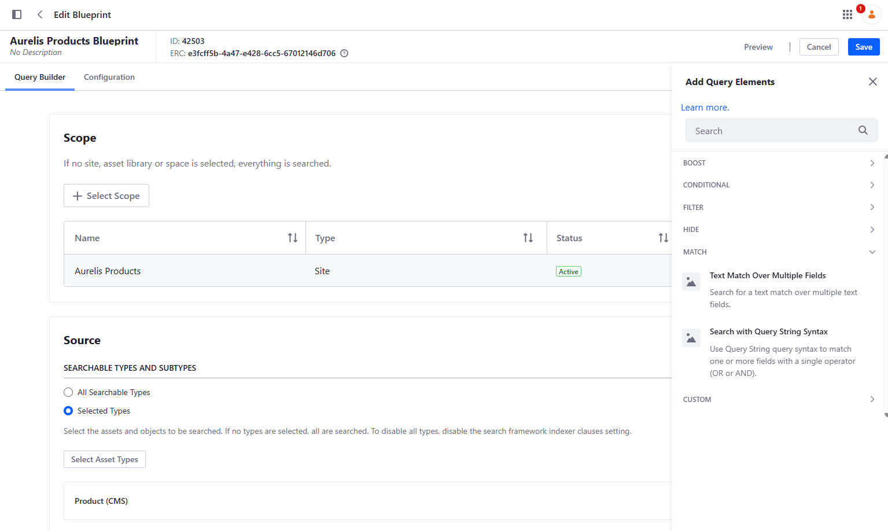
⚠️ ストラクチャーの名前は異なる場合があります。 ProductSheet は、私たちが演習 3.1 を実行した際にエージェントが選んだ名前です。この演習ではストラクチャーを指定しておらず、エージェントがこのワークスペースのドキュメントから各ストラクチャーを推測したため、名前（およびフィールド）はあなたのプロジェクトでは異なる可能性があります。CMS 管理画面（演習 3.2）に表示される、Product Content Space に実際に存在する製品ストラクチャーを使用してください。
- Search Worker エージェントを構築します。 Agent Builder → Liferay Search エージェントで、Duplicate アクションを使用します:
- Title: 例: Aurelis Products Liferay Search。
- Description: "Retrieval worker for Aurelis product knowledge — solar, GridMax, EV charging, Pulse, energy transformation programs. The request sent to this agent is used directly as the search query. Before invoking it, formulate a short, precise keyword query — never the visitor's original question verbatim. Prefer product names/codes over prose."
- Input Variables:
request。 - Output Variables:
response（使用されるのは最初の出力変数のみです。2 つ以上指定しないでください）。 - ワークフローを編集する前に、エージェントを有効にして Save をクリックします。
📸 スクリーンショット: 製品検索ワーカー。
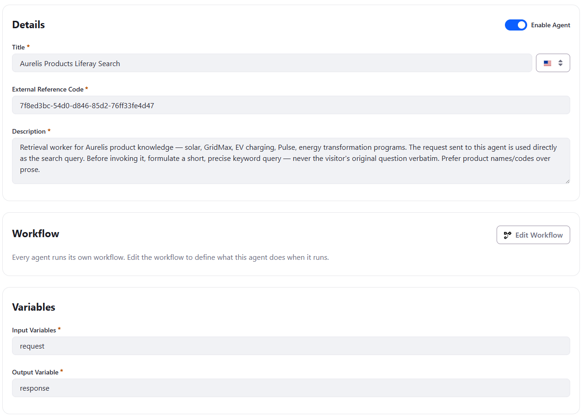
-
ワークフローを編集します:
Start → Liferay Search → Endとし、Liferay Search ノードの設定を編集します:- Prompt: "Analyze the retrieved product content and return factual evidence relevant to the request. Use only the retrieved information. Do not invent or infer missing product facts. Return concise findings; do not try to produce the final answer, as your response will be used as evidence by another agent."
- Input Variables:
[{"name": "request", "type": "string"}]。 - Output Variables:
[{"name": "response", "type": "string"}]。 - User Message:
{{request}}。 - RAG config:
{"contentRetriever": {"key": "liferay", "blueprintExternalReferenceCode": "<Blueprint ERC>"}}。 - Tools:
[]。
📸 スクリーンショット: 製品検索ワーカーのワークフロー。

- Answer Builder エージェントを作成します。 2 つ目の、別個のエージェントです。
- Title: 例: Aurelis Answer builder agent。
- Description: "Always invoke this agent last, after research is complete, passing the original request plus everything gathered — never use it for retrieval itself."
- Input Variables:
originalRequest,gatheredInformation。 - Output Variable:
response。 - Data Sources: Assigned Sources は空のままにします。
- ワークフローを編集する前に、エージェントを有効にして Save をクリックします。
📸 スクリーンショット: Answer Builder エージェント。
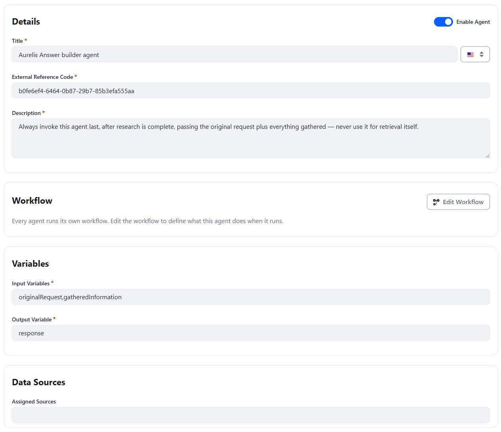
- ワークフローを編集します:
Start → LLM → End— Liferay Search ノードは使用しません。- Prompt:
Build a clear, direct answer to the original request from the gathered information alone; never invent unsupported facts; say explicitly when the evidence doesn't cover part of the question rather than guessing. Make synthetic responses, ask the user if he wants more details. - Input Variables:
[{"name": "originalRequest", "type": "string"}, {"name": "gatheredInformation", "type": "string"}]。 - Output Variables:
[{"name": "response", "type": "string"}]。 - User Message:
Original user request:\n{{originalRequest}}\n\nGathered information:\n{{gatheredInformation}}。 - RAG config:
[]。 - Tools:
[]。
- Prompt:
📸 スクリーンショット: Answer Builder エージェントのワークフロー。

- チャットボットを作成します。 AI Hub → Chatbots → New Chatbot。
- Title: 例: Aurelis Chatbot FBO（自分のイニシャルを使用）。
- External Reference Code: 自分のイニシャルを含む読みやすいもの（例:
AURELIS_CHATBOT_FBO）を設定し、書き留めておきます。Click to Chat（ステップ 8）とカスタムウィジェット（演習 9.1）の両方で必要になります。 - Enable Chatbot: オン。
- Assigned Agents: Search Worker と Answer Builder の両方を割り当てます。
- Intro Message を設定します。保存します。
📸 スクリーンショット: Aurelis RAG チャットボット。

-
Click to Chat でチャットボットをサイトに配置します。 Click to Chat は Liferay のネイティブなチャット連携で、AI Hub はそのサポート対象プロバイダーの 1 つです。サイトごとに 1 つのチャットボットを割り当て、そのサイトのすべてのページに表示します。作成や配置が必要なフラグメントはありません。設定は 2 か所で行います:
a. インスタンスで有効にします。 Control Panel → Instance Settings → Click to Chat: - Enable Click to Chat をオンにします。 - Site Settings Strategy: Inherit or Override。各サイトが独自のチャットボットを指定できるようにします。 - Chat Provider と Chat Provider Account ID は空のままにします。チャットボットは以下でサイトごとに設定します。 - 保存します。
📸 スクリーンショット: インスタンスレベルで有効化された Click to Chat。
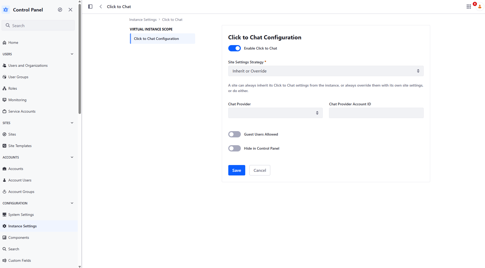
b. チャットボットを Aurelis サイトに割り当てます。 Site Menu → Configuration → Site Settings → Click to Chat: - Enable Click to Chat をオンにします。 - Chat Provider: AI Hub。 - Chat Provider Account ID: チャットボットの External Reference Code（AI Hub → Chatbots → ステップ 7 のチャットボット）。例:
AURELIS_CHATBOT_FBO。フィールドの下にある Get my account token for AI Hub リンクは無視してください。このフィールドに必要なのはチャットボットの ERC だけです。 - Guest Users Allowed をオンにします。これは公開チャットボットであり、以下の検証はログアウトした状態で行います。 - Hide in Control Panel: お好みで。オンにすると、チャットのバブルは管理画面には表示されず、サイトのページにのみ表示されます。 - 保存します。📸 スクリーンショット: AI Hub とチャットボットの ERC を設定した、Aurelis サイトの Click to Chat 設定。
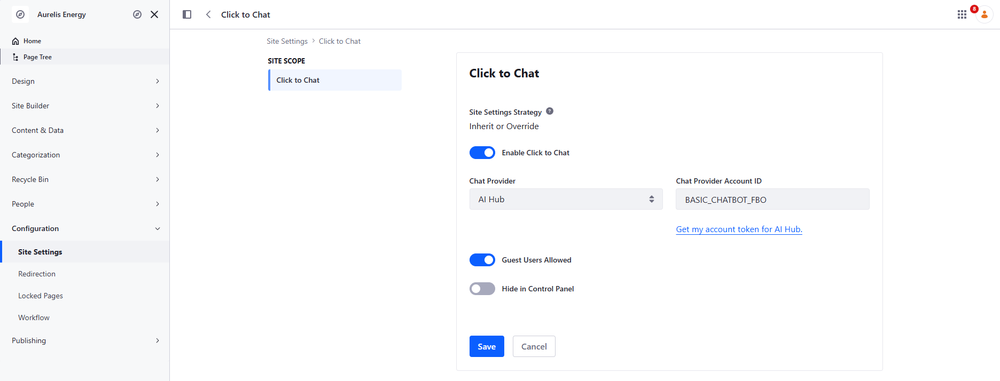
サイトの任意のページを再読み込みすると、すべてのページにチャットのバブルが表示されます。
⚠️ サイトごとにチャットボットは 1 つです。 Click to Chat では、一部のページにあるチャットボットを、別のページに別のチャットボットを配置することはできません。それが必要な場合は、以下の代替方法を使用してください。
💡 代替方法 — スニペットをフラグメントに埋め込む。 チャットボットにエージェントが割り当てられると、AI Hub の設定画面にすぐに使える HTML/JS スニペットも表示されます。これを新しいフラグメントにコピーし（Design → Fragments → Fragment Set 内で新しいフラグメントを作成 → HTML/JavaScript エディターに貼り付け）、そのフラグメントを目的のページにドラッグして公開します。この方法ではページ単位でチャットボットを配置できますが、ページごとに配置が必要です。同じサイトで Click to Chat と併用しないでください。併用すると、訪問者にチャットのバブルが 2 つ表示されます。
✅ 検証 — シークレットウィンドウ/ログアウトしたセッションから、稼働中のチャットボットに次の質問をします:
- "What is Aurelis GridMax and what does it do?" — グラウンディングされた回答
- "What does the Solar Energy product line cover?" — グラウンディングされた回答
- "If I'm interested in combining solar panels with EV charging, what would Aurelis offer me?" — 2 つの製品シートにまたがる実際の統合が必要
- "What's the guaranteed response time for a Critical severity support issue for Aurelis GridMax?" — 否定の検証: この約束事項は Product Content ではなく、Customer Documentation Space にある Customer Support & SLA Handbook に記載されています。ボットは数値を捏造せず、わからないと答える必要があります。
質問している間、ngrok インスペクター http://localhost:4040（演習 0.2）を確認してください。各質問で、AI Hub の Liferay Search ノードがあなたの DXP を呼び出し、200 が返されることが表示されるはずです。リクエストがまったくない場合は、エージェントが DXP に到達していません（RAG config 内の Blueprint ERC と AI Hub の接続を確認してください）。401/403 の場合は、DXP に到達したものの拒否されたことを意味します。
7.3 — アカウントごとの機密情報で Energy Advisor を拡張する
🎯 7.2 のチャットボットを拡張し、直接の API 呼び出しによってアカウントごとの機密情報に回答できるようにします。あるアカウントが別のアカウントのデータを決して見られないことを検証します。
🧩 manage-objects（AccountRolloutDetail）、manage-ai-hub 🆕（HTTP Request エージェントと OAuth2 スコープの付与は、引き続き AI Hub/DXP のコンソールで手作業で行います。スキルは設定内容を伝え、それを検証します）。
📖 7.2 の Energy Advisor が知っているのは、公開されている製品シートだけです。Novacorp や Solstice Manufacturing といった Aurelis の顧客企業は、自社の案件についても質問したいと考えています: 何が設置されるのか、どのようなスケジュールで、どのような交渉済みの条件で、担当のアカウントマネージャーは誰か。こうした情報は各顧客にとって機密です。この演習では、これらの情報をアカウントごとに保存し、チャットボットに取得させることで、サインインしたユーザーが常に自社の回答だけを得られるようにします。
📋 1. データのセットアップ。
💬 プロンプト：
Using manage-objects, create the AccountRolloutDetail Custom Object, related
oneToMany from Account (name the relationship accountToRolloutDetails).
Fields: installationScope (Text), phasedSchedule (Text), negotiatedTerms
(Text), accountManagerName (Text).
Enable Account Restriction on this object definition, with the Account
Restricted Field set to the relationship to Account. This is what makes
GET /o/c/accountrolloutdetails return only the entries belonging to the
caller's own account instead of every account's data — without it, REQ-35
(one account must never see another's data) is not actually enforced,
whatever the HTTP Request node's URL/filter looks like.
Then, using the Liferay MCP server, read
context-source/historical-rollout-data.csv and import each row as a real
AccountRolloutDetail entry, resolving the matching Account by company name
yourself.
Finally, create two test users so the verification below has someone real to
log in as: Sophie Martin (sophie.martin@novacorp.example), associated to the
Novacorp Account, and Marcus Webb (marcus.webb@solsticemanufacturing.example),
associated to the Solstice Manufacturing Account. Each must be a genuine
member of their own account and nothing else — this is what Account
Restriction actually filters on, so a user who isn't a real account member
won't resolve to any rollout data at all, restricted or not.
Access expectations: Account Restriction only filters results, it grants
nothing. Make sure members of an account actually hold VIEW on their own
account's AccountRolloutDetail entries, and tell me which role carries that
grant. Grant Guest nothing on this object, and give no company-wide VIEW
that would bypass the restriction. Both users must be active and able to
sign in. Verify as each of them: Sophie gets only Novacorp's entry, Marcus
only Solstice's, and an anonymous request gets nothing.
⚠️ ある顧客が別の顧客のデータを見られないようにしているのは Account Restriction であり、HTTP Request ノードの URL ではありません。 以下の HTTP Request ノードが呼び出す素の GET /o/c/accountrolloutdetails には、アカウントごとのフィルターが一切ありません。結果を呼び出し元自身のアカウントに絞り込むことは、完全にオブジェクト側に依存しています。このトグルを省略すると、まったく同じ呼び出しを通じて、すべてのアカウントが他のすべてのアカウントのロールアウトデータを見られてしまいます。管理者はそもそも特定のアカウントに制限されないため、管理者ユーザーでの簡単なテストではこの穴は見つかりません。以下の ✅ 検証で、管理者ではなく、必ず実際の非管理者のアカウントユーザーとしてテストするよう求めているのもこのためです。
📋 2. HTTP Request エージェントを構築して接続します（AI Hub コンソール）:
- Agent Builder → New Agent:
- Title: 例: Aurelis Current User's account contract information Agent。
- Description: "Use this agent to fetch information about the current user's account's contracts." チャットボットの Supervisor はこの説明をもとに呼び出すエージェントを選ぶため、曖昧なままにしないでください。
- Input Variables:
request。 - Output Variable:
response。 - エージェントを有効にして Save をクリックし、次に Edit Workflow:
Start → HTTP Request → LLM → End。
📸 スクリーンショット: アカウント情報エージェント。

- HTTP Request ノード:
- Method:
GET - URL:
{{aiHubCellLiferayDXPURL}}/o/c/accountrolloutdetails - Request body: 空
- Input Variables:
[{"name": "aiHubCellLiferayDXPURL", "type": "string"}]。 - Output Variables:
[{"name": "rolloutDetails", "type": "string"}]。 - カスタムヘッダーのフィールドはありません。Bearer トークンは AI Hub↔DXP の OAuth2 接続から自動的に付与されます。
📸 スクリーンショット: アカウント情報エージェントのワークフロー: HTTP Request ノード。

注: aiHubCellLiferayDXPURL は注入可能なコンテキスト変数で、Liferay DXP 環境の URL が格納されています。
- LLM ノード:
- Prompt:
You are an agent in charge of responding to a request about a user's contracts, using your contract knowledge. - Input Variables:
[{"name": "request", "type": "string"}, {"name": "rolloutDetails", "type": "string"}] - Output Variables:
[{"name": "response", "type": "string"}] - User Message:
This is what you know about the user's contracts:\n{{rolloutDetails}}\n\nThis is what you are specifically asked to do:\n{{request}}。{{request}}は必ず残してください。これがないと、LLM は質問をまったく受け取りません。 - RAG config:
[]。 - Tools:
[]。
📸 スクリーンショット: アカウント情報エージェントのワークフロー: LLM ノード。

-
このエージェントを、先ほど作成したチャットボットに追加します。
-
チャットボットと対話すると、失敗するはずです。ngrok を http://localhost:4040 で監視していれば、
403レスポンスが確認できます。これはバグではありません: 呼び出しが DXP に到達し、正しく拒否されたことを示しています。 -
次にスコープを付与します。 Control Panel → OAuth 2 Administration → AI Hub Cell アプリケーション → Scopes →
c_accountrolloutdetail.everything.readを追加します。保存した後、新しいスコープを含む新しいトークンが取得されるよう、一度ログアウトして再度ログインします。
📸 スクリーンショット: 新しいスコープが付与された AI Hub Cell アプリケーションの Scopes タブ。

- 再度、エンドツーエンドでテストします。 以下のいずれかのアカウントに所属する（または所属しない）エンドユーザーで比較します。ngrok インスペクターでは、各質問で
GET /o/c/accountrolloutdetailsが403ではなく200を返すようになります。
📋 テストデータ:
| アカウント | 機密データ |
|---|---|
| Novacorp | 42 拠点、3 フェーズのスケジュール、€8.2M、Camille Laurent |
| Solstice Manufacturing | パネル 180 枚 + 充電器 12 台、2 フェーズのスケジュール、4 時間 SLA、Diego Fernandes |
✅ 検証 — 管理者ではなく、実際の各テストアカウントでログインして行います:
- Sophie Martin（Novacorp）: "How many sites are in the current rollout phase?" / "What price did we negotiate?" — どちらも正しくグラウンディングされていること。
- Sophie Martin、否定の検証: "What's Solstice Manufacturing's SLA response time?" — Solstice のデータに由来する情報が何も返らないこと。
- Marcus Webb（Solstice）: 対になる同様の 2 つの質問に加え、Novacorp の契約金額を尋ねる否定の検証。
- チャットボットの最終的な回答だけでなく、各呼び出しで HTTP Request ノードが実際に解決したアイデンティティ/フィルターを個別に確認します。誤ってフィルターされたリクエストから偶然正しい回答が得られるのは、実際に起こりうる失敗パターンであり、除外しておく価値があります。ngrok インスペクター（http://localhost:4040）で、各テストユーザーの質問に対応する
GET /o/c/accountrolloutdetailsリクエストを開き、そのレスポンスボディを確認します。Sophie Martin としてサインインしている場合は Novacorp のエントリーのみ、Marcus Webb の場合は Solstice のエントリーのみが含まれている必要があります。
レベル 8 — Digital Sales Room (DSR)
8.1 — Account Intelligence から Digital Sales Room まで、エンドツーエンドで
🎯 Account Intelligence ページを開き、combinedOpportunityScore（演習 2.3 で読み込み、演習 6.2 以降で計算）で Aurelis の最高スコアのアカウント — Novacorp、スコア 83（リードが紐付けられていればそれ以上）— を見つけ、Liferay 公式の DSR Launchpad の手順にそのまま従い、カスタマイズなしでその Digital Sales Room を立ち上げます。このレベルは、レベル 2〜7 で構築済みのものに、ドキュメントどおりに使う Liferay ネイティブの機能を組み合わせるだけです。新しいオブジェクト、ページ、フラグメント、Client Extension は作成しません。
🧩 なし — 公式ドキュメントどおりの GUI 操作のみです。
📎 CSF-02（アカウント中心の Fit × Value × Intent による評価）、CSF-05（摩擦のない協働型の営業とパートナーエンゲージメント）、REQ-28、REQ-29（Digital Sales Room）。
📋 有効化（初回のみ — Activating Digital Sales Room に従います）:
- Marketplace Customer Dashboard → My Products → DSR 製品 → Download タブ → このインスタンス用の
.lpkgパッケージをダウンロードします。 - 同じ製品 → Activation タブ → DSR ライセンスキー（
.xml）を作成してダウンロードします。 - 両方のファイルを
Liferay Home/deployにデプロイします。 - DXP を再起動し、すべての DSR モジュールが
STARTEDをログに出力するまで待ちます。 - Global Menu → Commerce → Digital Sales Room Management
📸 スクリーンショット: 有効化された Digital Sales Room。
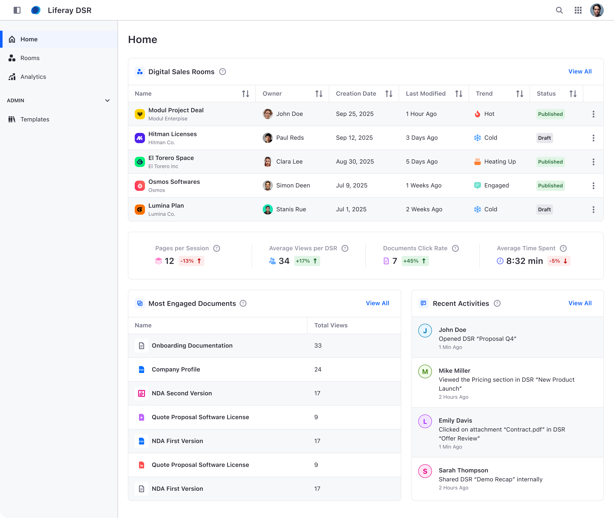
⚠️ DSR Management の画面に空のページを持つサイトが表示される場合（Rooms にルーム一覧がない、分析ページが空白）、DSR のサイトイニシャライザーが起動中の早すぎるタイミングで実行されています。初期の HTTP リクエスト（再読み込み中のブラウザタブ、ngrok トンネル、ヘルスチェック）が DSR のフラグメントレンダラーの登録前にそれを起動し、dsr-view-* フラグメントがすべてのページから暗黙のうちに削除されたのです。再起動しても確実には直りません。代わりに、既存のサイトに対して DSR サイトイニシャライザーを再実行します。Control Panel → Server Administration → Script を開き、Groovy を選択して、以下のスクリプトを貼り付け、Execute をクリックします。既存のページをその場で更新し（サイトの削除も重複もありません）、約 20 秒かかります。DSR のレンダラーがまだ登録されていない場合は自動的に中断するので、その場合は起動の完了を待ってから再実行してください。これは修正中の既知の問題で、修正後はこのスクリプトを実行する必要はなくなります。
import com.liferay.fragment.renderer.FragmentRendererRegistry
import com.liferay.portal.kernel.change.tracking.CTCollectionThreadLocal
import com.liferay.portal.kernel.module.util.SystemBundleUtil
import com.liferay.portal.kernel.service.GroupLocalServiceUtil
import com.liferay.portal.kernel.service.ServiceContext
import com.liferay.portal.kernel.service.ServiceContextThreadLocal
import com.liferay.portal.kernel.util.PortalUtil
def bundleContext = SystemBundleUtil.getBundleContext()
def registry = bundleContext.getService(
bundleContext.getServiceReference(FragmentRendererRegistry.class))
if (registry.getFragmentRenderer("dsr-view-rooms") == null) {
out.println("dsr-view-rooms is not registered yet. Aborting.")
return
}
def group = GroupLocalServiceUtil.getGroup(PortalUtil.getDefaultCompanyId(), "DSR")
def references = bundleContext.getServiceReferences(
"com.liferay.site.initializer.SiteInitializer",
"(site.initializer.key=com.liferay.site.initializer.dsr)")
def siteInitializer = bundleContext.getService(references[0])
def safeCloseable = CTCollectionThreadLocal.setProductionModeWithSafeCloseable()
ServiceContextThreadLocal.pushServiceContext(new ServiceContext())
try {
siteInitializer.initialize(group.getGroupId())
out.println("DSR site reinitialized: group " + group.getGroupId())
}
finally {
ServiceContextThreadLocal.popServiceContext()
safeCloseable.close()
}
出力は DSR site reinitialized: group <id> となるはずです。Digital Sales Room Management を再読み込みすると、ページが表示されるようになります。根本原因、ログのタイムライン、代替の修正方法は troubleshooting/DSR_ACTIVATION_TROUBLESHOOTING.md §3.3 にあります。
📋 Novacorp のルームの作成（DSR Launchpad ドキュメントに従います）:
- Global Menu → Commerce → Digital Sales Room Management → Rooms → New Digital Sales Room。
📸 スクリーンショット: New Digital Sales Room をクリックして専用のスペースを作成します。
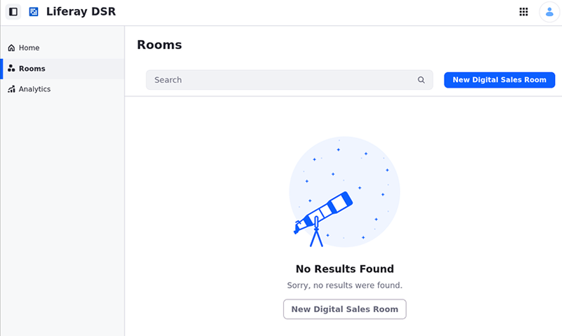
- 関連付けるアカウントとして Novacorp を選択 → Next。ここで選んだアカウントによって、ルームに招待できるチームメンバーと連絡先が決まります。このルームに実際に入る必要があるのは、Novacorp 自身のアカウントマネージャーである Camille Laurent（演習 7.3 の展開データ）です。
📸 スクリーンショット: ルームに関連付けるアカウントを選択します。
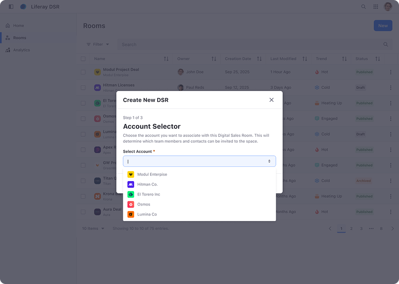
- 事前設定済みのテンプレートを選択 → Next。
📸 スクリーンショット: テンプレートを選択して開始します。
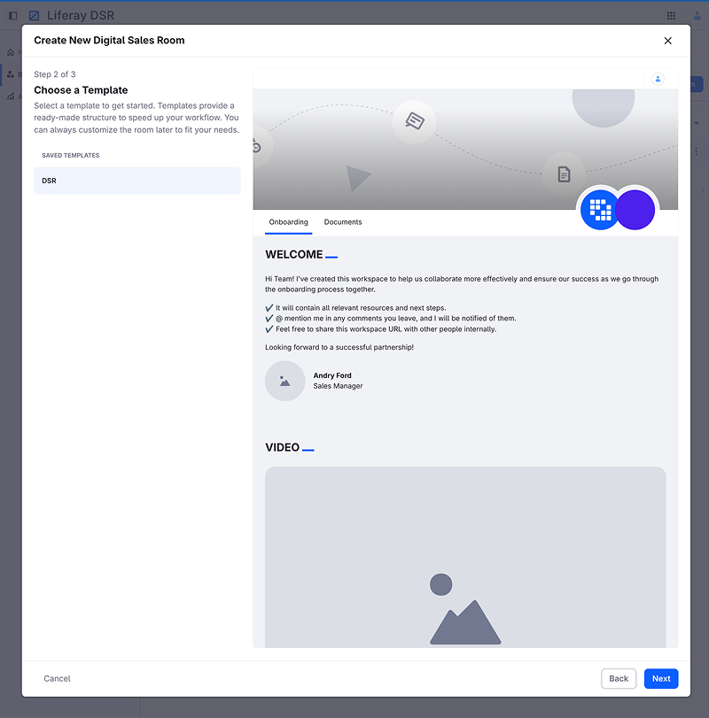
- 名前を付け（例: 「Novacorp — Solar + GridMax Rollout」）、必要に応じて Friendly URL を設定 → Save。
📸 スクリーンショット: ルームの名前と Friendly URL を入力します。
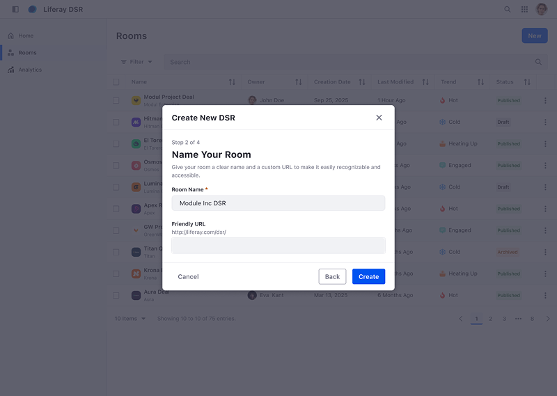
- 後で開き直すには: Commerce → Digital Sales Room Management → Rooms → 一覧から選択します。作り込みが完了すると、Novacorp 固有の展開コンテンツがタブ（Onboarding、Documents など）に整理された、公開可能なワークスペースになります。
📸 スクリーンショット: コンテンツを入れた後のプロビジョニング済みルーム。

- 顧客を招待します。 ルームから、Sophie Martin（演習 7.3 で作成した Novacorp のユーザー）を参加者として招待します。招待しないと、以下の検証でログインするユーザーがいません。Novacorp アカウントのメンバーであるだけでは、ルームへのアクセス権は得られません。
✅ 検証: Novacorp に紐付いた別の非管理者ユーザー（Sophie Martin、または招待した関係者）として新しく作成したルームを開き、ルームとその共有ドキュメントが表示されることを確認します。管理者による作成フローはプロビジョニングが機能することを証明するものであり、この 2 つ目の確認こそが、営業担当者から顧客への実際のジャーニーが機能することを証明します。
8.2 — ネイティブからカスタムへ: 保存されたシミュレーションから生成されるルーム
🎯 Solar + Battery Simulator（6.1）を、営業の会話の出発点に変えます。自社のアカウントでサインインした顧客が、公開ページでシミュレーションを実行し、Save your simulation をクリックします。すると Liferay が、カスタムの "Aurelis — Solar + Battery Proposal" テンプレートから、そのアカウント用の Digital Sales Room を作成します。ルームには顧客自身の数値で開く Simulation タブがあり、顧客と Aurelis の営業担当者がそこで一緒に数値を練り直します。
🧩 manage-dsr 🆕、manage-objects、manage-roles-permissions、scaffold-fragment、scaffold-client-extension（customElement と objectAction）、setup-oauth、manage-object-logic、browser-verify。
📎 CSF-05（摩擦のない協働型営業）、REQ-28、REQ-29（Digital Sales Room）、REQ-63–REQ-66（シミュレーター）。
📖 8.1 は営業担当者起点でしたが、今回は顧客起点です。 8.1 では、営業担当者がウィザードで手動でルームを開きました。ここでは顧客自身の操作によってルームが開かれ、顧客が生成したデータがすでに中に入っています。これを可能にしているのは DSR に関する 3 つの事実で、manage-dsr スキルがそれぞれを文書化しています:
- ルームはオブジェクトエントリーです。 すべてのルームはシステムオブジェクト
DSRRoomのエントリーであり、/o/digital-sales-room/roomsにエントリーを POST すると、ルームとそのサイトが作成されます。ウィザード自身もこれを行っています。headless-dsrには「ルーム作成」のエンドポイントはなく、複製、メンバー、招待のみがあります。 - ルームテンプレートは Site Template です。 エントリーの
siteTemplateKeyフィールドで UUID によって参照されます。ウィザードはインスタンスのすべての Site Template を一覧表示するため、手動でルームを作成する営業担当者向けに、カスタムテンプレートもそこに表示されます。 - ルームはサイトなので、サイトスコープのデータを保持できます。 サイトスコープのオブジェクトは、ルームごとに 1 つのエントリーを格納します。テンプレートに配置されたシミュレーターは、ページに ID を持たせることなく、現在のサイトから「このルームのシミュレーション」を読み取ります。
📖 他はすべて Client Extension なのに、テンプレートが OSGi モジュールである理由。 Liferay には Site Template を作成する REST エンドポイントがありません。siteInitializer Client Extension でもテンプレートを対象にできません。テンプレートのグループはサイトではなく、その CX が使うエンドポイントが拒否するためです。また、サイトのページをエクスポート/インポートでテンプレートにコピーすると、LARTypeException で失敗します。そこで、テンプレートは Liferay が自社の DSR テンプレートをパッケージ化しているのと同じ方法でパッケージ化します:
- 1 つの OSGi モジュールがサイトイニシャライザーのツリーを持ち、バンドルヘッダー
Liferay-Site-Initializer-Nameがそれをサイトイニシャライザーとして登録します。 - 小さなコンポーネントが固定の UUID で Site Template を作成し、そこにツリーを適用します。
代償: これはモジュールをデプロイできない Liferay SaaS では動作しません。その場合、テンプレートは手動で作成することになります。
⚠️ 前提条件: 8.1 が完了していること（DSR が有効化済み）、6.1 のシミュレーター、そして Novacorp Account のメンバーである 7.3 の Sophie Martin。ターミナルを 1 つ空けておいてください。ステップ 3 のルームを作成するマイクロサービスは、ローカルの Node プロセスとして実行されます。
📋 1. ルームテンプレート。
💬 プロンプト：
Using manage-dsr, package a custom Digital Sales Room template as an OSGi
module in modules/aurelis-dsr-solar-template, the way DSR packages its own:
- The module carries a site-initializer tree. Start from the tree of the
"Digital Sales Room" initializer (the room template, not the "DSR"
initializer that builds the management screens), copied from the
com.liferay.digital.sales.room.site.initializer jar inside the DSR Impl
lpkg. Keep its Onboarding, Documents and Login pages and its
digital-sales-room-master master.
- Add a fourth page, Simulation (/simulation), on that master, with a short
intro and the simulator: copies of the 6.1 simulator fragments in their own
collection, since fragment keys are per site.
- A component creates the Site Template "Aurelis — Solar + Battery Proposal"
with the fixed UUID AURELIS_DSR_SOLAR_TEMPLATE where DSR is deployed, and
re-applies the tree whenever the module is redeployed.
Then create one room over REST with that template for Novacorp, check it has
the four tabs, and delete it.
Access expectations: none of the template's pages may be visible to Guest.
✅ ログに Applied com.aurelis.dsr.solar.template … to Site Template AURELIS_DSR_SOLAR_TEMPLATE と表示されます。テンプレートが Digital Sales Room Management → New Digital Sales Room → Choose a template に、デフォルトのテンプレートと並んで表示されます。
📸 スクリーンショット: "Aurelis — Solar + Battery Proposal" が選択され、そのプレビューが表示されたウィザードのテンプレートステップ。
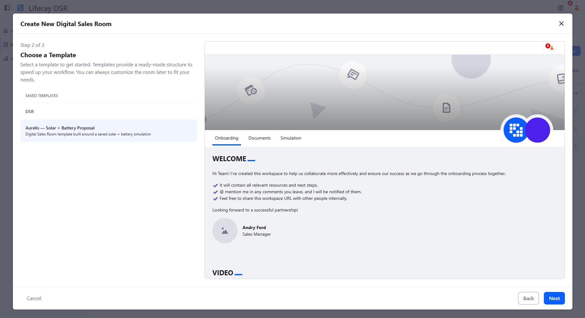
📋 2. シミュレーションの保存。
💬 プロンプト：
Using manage-objects, create a site-scoped SolarSimulation object, related
oneToMany from Account (relationship accountToSolarSimulations) and Account
Restricted on that relationship. Fields: address (Text), latitude, longitude,
surfaceM2 (Decimal), hourlyConsumptionKwh (LongText, a JSON array of 24
numbers), and for the room round trip roomId, roomSiteId, sourceSimulationId
(LongInteger) and roomURL (Text).
Using scaffold-client-extension, add a third simulator widget,
aurelis-simulator-save, coupled to the inputs widget only through
Liferay.on('aurelisSimulatorInputsChanged') and
Liferay.fire('aurelisSimulatorInputsRequested'), like the results widget:
- mode="create" on the public simulator page: shown only to a signed-in user
who belongs to an Account. "Save your simulation" creates a SolarSimulation
in the current site for that Account, then waits for the entry's roomURL
and shows a link to the room.
- mode="update" on the template's Simulation page: saves the edited inputs
onto the room's own SolarSimulation (the latest of the current site).
Teach aurelis-simulator-inputs to start from saved data: with the attribute
load-scope-simulation, it loads the latest SolarSimulation of the current
site and starts from it. Use that attribute on the template's copy of the
fragment only. Place the save widget under the inputs widget on both pages.
Create Camille Laurent (camille.laurent@aurelis.example), Aurelis's seller,
with the regular DSR Seller role, as a test user.
Access expectations: a signed-in user may create SolarSimulation entries only
for an Account they belong to; Guest gets nothing and sees a sign-in hint
instead of the button; a signed-in user with no Account sees no button.
Inside a room, the members (DSR Room Collaborator and DSR Content
Contributor) can read and update the room's simulation, through grants in
the site initializer's resource-permissions.json. Nobody else can.
📋 3. ルームの作成。
💬 プロンプト：
Using scaffold-client-extension and setup-oauth, build an objectAction
microservice, aurelis-dsr-room-provisioner (Node, no dependencies), attached
to SolarSimulation onAfterAdd. For a simulation saved on the public page:
1. create a Digital Sales Room for the simulation's Account from the template
AURELIS_DSR_SOLAR_TEMPLATE, named "<Account> — Solar + Battery Proposal
#<simulation id>";
2. wait until the room is initialized;
3. copy the simulation into the room's site scope, marked as a copy;
4. add the customer who saved it as DSR Room Collaborator and Camille as
DSR Content Contributor;
5. write roomId, roomSiteId and the room's Simulation page URL back onto the
saved simulation.
Ignore copies, or the action fires on its own copy. Use its own
oAuthApplicationHeadlessServer identity for every call back into Liferay,
with only the scopes it needs. Answer the action's call at once and do the
work afterwards. Start it locally and tell me the command you used.
Access expectations: the customer's own token must not be what creates the
room. Verify the whole journey in a browser with browser-verify, as Sophie
(save, open the room, edit and save there), as Camille (opens the room, sees
Sophie's edit), as a signed-in user outside Novacorp (no button, 404 on the
room) and as Guest (sign-in hint, 404 on the room).
⚠️ マイクロサービスは Liferay の外部で実行されます。 blade gw deploy は CX とその OAuth アプリケーションを登録しますが、Node プロセスは起動しません。その場合 Liferay は誰も待ち受けていないポートを呼び出し、保存ウィジェットは決して来ないルームを待ち続けます。エージェントが提示するコマンドで起動し、実行したままにしておいてください。
✅ 検証：
- Sophie として: 公開シミュレーターで都市を指定し、面積を設定してから、Save your simulation をクリックします。数秒以内に "Open your Digital Sales Room" というリンクが表示されます。ルームは Simulation タブで開き、Sophie の住所、面積、プロファイルがすでに読み込まれています。面積を変更し、Save changes をクリックして再読み込みすると、新しい値が保持されています。
- Camille として: ルームのリンク（保存ウィジェットが Sophie に表示した URL）を開きます。Simulation タブには Sophie の最新の値が表示され、Camille も変更を保存できます。
- それ以外のユーザーとして: Novacorp 外のサインイン済みユーザーには保存ボタンが表示されず、ルームでは
404になります。ゲストも同様で、ボタンの代わりにサインインの案内が表示されます。 - データ: Aurelis サイトに保存されたシミュレーションは元の値を保持し、ルームの URL を持ちます。ルーム自身のコピーには編集内容が入ります。2 つのエントリー、2 つのスコープです。公開レコードは顧客が送信したままに保たれ、ルームは作業用のバージョンを保持します。
📸 スクリーンショット: 保存後の公開シミュレーターとルームへのリンク。保存された数値が読み込まれたルームの Simulation タブ。
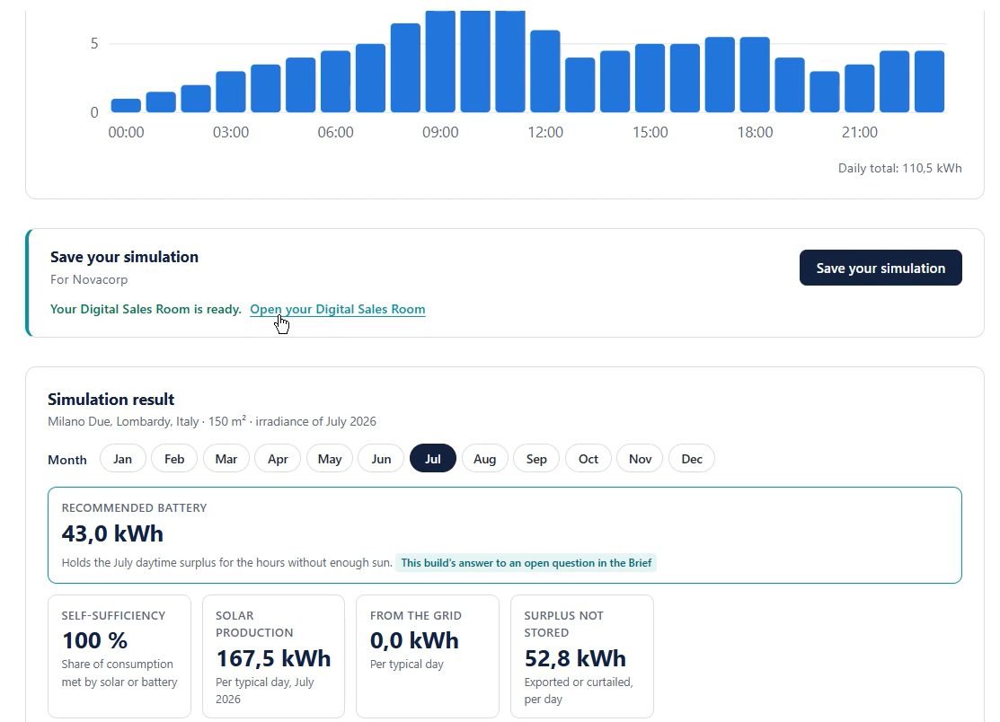
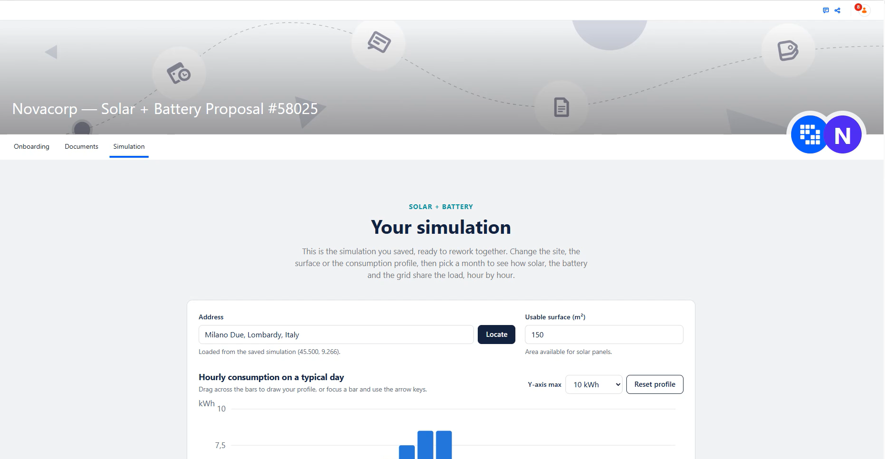
レベル 9 — ネイティブからカスタムへ: 手作りのチャットボットウィジェット（Client Extensions、AI Hub、Segments、LDP）
演習 7.2〜7.3 で、適切にスコープ設定されたチャットボットはすでに立ち上がっています。このレベルでは、ネイティブの Click to Chat ではできないことを、カスタム構築したウィジェットで上乗せする方法を示します。リアルタイムのセグメントのコンテキストと、会話から得られる購買意欲のシグナルです。
9.1 — リアルタイムのセグメントコンテキストを持つカスタムウィジェット
🎯 AI Hub 自身のチャットボット REST API を直接呼び出し、訪問者が特定のホワイトペーパーをすでに読んだという事実を注入する、自己マウント型のチャットバブル Client Extension です。
🧩 scaffold-client-extension（自己マウント型 customElement バリアント）、react-custom-elements、manage-ai-hub 🆕、manage-analytics 🆕
📖 ネイティブの Click to Chat のバブルを独自のチャットバブルに置き換えますが、通信先は同じ AI Hub のチャットボットのままです。自分で構築することで、ネイティブ連携ではできない 2 つのことが可能になります。チャットボットが、訪問者がサイト上ですでに行ったこと（ここでは特定のホワイトペーパーを読んだこと）を把握して回答を調整できること、そしてすべてのやり取りが Analytics で追跡され、会話が測定可能な購買意欲のシグナルになることです。
📋 手順：
- Aurelis サイトの Click to Chat をオフにします。 Site Menu → Configuration → Site Settings → Click to Chat → Enable Click to Chat をオフ → Save。そうしないと、すべてのページに演習 7.2 のネイティブのバブルと独自のバブルの 2 つのチャットバブルが表示されます。7.2 で代替のフラグメントを使った場合は、そのフラグメントをページから削除してください。チャットボット自体は AI Hub でそのまま残します。ウィジェットは同じチャットボットと通信します。
- チャットボット自身の ERC を控えます。 AI Hub → Chatbots → 演習 7.2 で構築したチャットボットで、その External Reference Code を確認します。これは Click to Chat で Chat Provider Account ID として入力した値です（演習 7.2、手順 8）。書き留めておいてください。以下のウィジェットはチャットボット自身の API と直接通信するため、すべての呼び出し（設定の取得、チャットのサブスクライブ、メッセージの送信）をこのチャットボットに正確に向ける必要があり、エージェントに推測させたり作り出させたりしてはいけません。
- リアルタイムのセグメントを作成します。 Liferay Data Platform の Segments 管理画面で、演習 4.1 のファネルを通過した訪問者に一致する Member Segment を作成します。LDP のエディターでは Individuals Segment（リアルタイム）と呼ばれます。条件: Individual has triggered
whitePaperDownloaded_<your initials>at least 1 time in the last 1 days。演習 4.1 と 4.2 で作成した、自分のイニシャルを末尾に付けたイベントを使い、末尾なしの名前や他の参加者のイベントは決して使わないでください。この LDP ワークスペースは全参加者で共有されているためです。Title/Description を設定したら、セグメント自身の External Reference Code フィールドを開き、自動生成されたものをそのまま使わずに、自分が確実に見分けられる値に編集します（例: 自分のイニシャルを使ったwhitepaper-readers-abc）。ERC フィールドに使えるのは小文字とハイフンのみで、大文字やアンダースコアは使えません。このワークスペースは共有されているため、ランダムに自動生成された ERC は見失いやすく、他の参加者のものと混同しがちです。選んだ値を書き留めておいてください。以下で必要になります。
📸 スクリーンショット: （変更後の）ERC が表示されたセグメントの詳細画面。
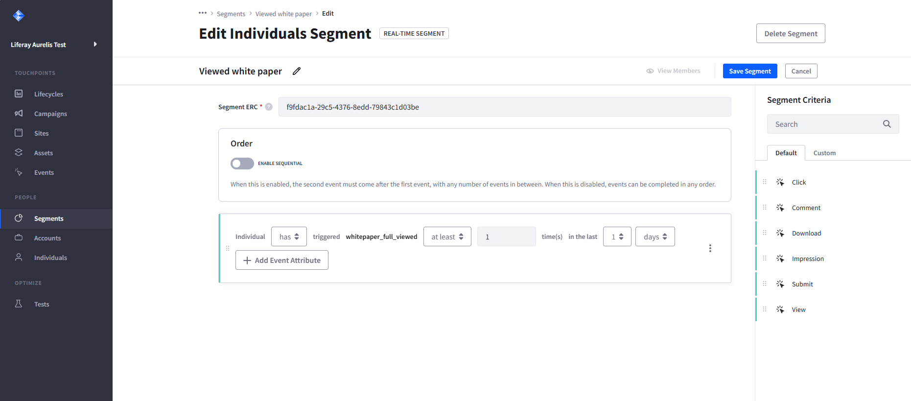
- ウィジェットを構築します。 シングルトンで自己マウント型の
customElementClient Extension（チャットバブル形式）で、ネイティブの Click to Chat を使う代わりに、ネイティブのチャットボット自身の API 呼び出し（設定の取得、chats/subscribeSSE、POST .../messages—manage-ai-hubに従います）を再現します。メッセージの POST には最初から「Cell」の on-behalf-of 認可レイヤーを実装してください。これは機能検出によるもので、実質的に省略できません。省略するとすべてのメッセージが匿名で送信され、チャットボットの Search Blueprint がゲストに表示できないコンテンツから取得する場合、取得結果は何も返らず、しかも見た目は「ウィジェットが壊れている」のとまったく同じになります。 - セグメントのコンテキストを付加します。 クライアント側で
Analytics.segment.getRealTimeSegmentExternalReferenceCodes()を呼び出します。これは、訪問者の現在のリアルタイムセグメントの ERC の配列で解決される Promise を返します。ステップ 2 の実際の ERC から説明文（"has already read Aurelis' Novacorp white paper on solar and GridMax energy storage"）へのマップをハードコードします。訪問者の ERC が一致したら、その説明文を AI Hub へのすべてのメッセージとともに、メッセージのcontextオブジェクト内のキーvisitorContextで送信します（一致するセグメントがない場合は空文字列）。メッセージ本文の中には決して入れないでください。 - すべての応答を追跡します。 実際にキャプチャしたストリームには、
manage-ai-hubに記載された 2 つの名前付きイベント以外のものも含まれています。: heartbeatのコメント行が多数あり、エージェントの内部ワークフローの実行に伴って、1 ターンごとに複数の中間event: <nodeName>メッセージ（例:event: liferaySearch、あるいはノード自身の UUID をそのまま名前にしたイベント）が届き、それぞれが部分的または重複した{"nodeName", "data", "type"}ペイロードを持っています。そのどれも最終的な回答ではありません。Analytics.track()は、そのターンのストリームの終端イベントにのみ結び付けてください。Chat Message Sent（成功 —agentDefinitionExternalReferenceCodesを持つ唯一のイベント）、またはAgent Invocation Failed/接続のerror（失敗）です。名前付きイベントごとに発火させると、実際の 1 回の返信に対して重複した「成功」イベントがいくつも記録されてしまいます。Analytics.track()の第 2 引数に渡すものはすべてサニタイズしてください。受け付けるのは 1024 文字以内の文字列・数値・ブール値のみで、生の配列（例:agentDefinitionExternalReferenceCodes）や長すぎる文字列を渡すと、SDK から捕捉されない例外が直接スローされます。
💬 プロンプト（手順 1 の自分のチャットボット ERC と手順 2 のセグメント ERC に置き換えてください）:
Build a self-mounting, singleton customElement Client Extension (chat-bubble style) that talks directly to AI Hub's own chatbot REST API — config fetch,
chats/subscribe SSE stream, POST .../messages — using the confirmed pattern
in the manage-ai-hub skill, instead of Liferay's native Click to Chat
integration (it is turned off for this site). My chatbot's own External Reference Code is
"<your Chatbot's real ERC>" — use it for every one of these calls, don't
invent or guess a different one.
Implement the "Cell" on-behalf-of authorization layer (postAuthorizationToken
in the confirmed pattern) and attach its headers to at least the message POST
from the start, not as an afterthought — it's feature-detected, not skippable
in effect: an anonymous message POST against a permission-scoped Search
Blueprint silently retrieves nothing, which looks identical to "the widget is
broken" with no error anywhere.
Client-side, call Analytics.segment.getRealTimeSegmentExternalReferenceCodes()
— it returns a Promise resolving to an array of the visitor's current
real-time Segment ERCs — and check the result against this hard-coded map:
{"<your Segment's real ERC>": "has already read Aurelis' Novacorp white
paper on solar and GridMax energy storage"}
On every message POSTed to AI Hub, send the matching description in the
message's context object under the key visitorContext, e.g.
"context": {"visitorContext": "has already read Aurelis' Novacorp white
paper on solar and GridMax energy storage"}, or an empty string when no segment matches. Never
append it to the message text: the context keys bypass the chatbot's
Supervisor and reach the agent's workflow directly.
The SSE stream fires several intermediate "event: <nodeName>" messages per
turn before the real answer (e.g. "event: liferaySearch", or an event named
after a workflow node's own UUID), plus ": heartbeat" comment lines — ignore
all of those for tracking purposes. Only fire Analytics.track() on the
stream's terminal event for that turn: one custom event (e.g.
chatbotResponseReceived) carrying real metadata from the SSE payload (e.g.
agentDefinitionExternalReferenceCodes) when the terminal event is "Chat
Message Sent", and a distinct custom event (e.g. chatbotResponseError) when
it's "Agent Invocation Failed" — or a generic connection error — instead.
Never fire the success event for a manifest chatbot error, and never fire
more than one tracked event for a single reply. Analytics.track() only
accepts string/number/boolean property values capped at 1024 characters, so
sanitize anything forwarded from the SSE payload first (join an array like
agentDefinitionExternalReferenceCodes into a string, stringify any object,
truncate long strings) — passing a raw array or an over-length string
straight through throws an uncaught exception from inside the SDK.
📋 次に、AI Hub のコンソールで（プロンプトではなく GUI での編集）: 7.2 の Answer Builder エージェントを、新しい visitorContext キーを読み取るように更新します。変更はすべて LLM ノードで行い、エージェント定義には何も変更を加えません:
- エージェント定義の Input Variables はそのまま（
originalRequest,gatheredInformation）にします。決してそこにvisitorContextを追加しないでください。これらの変数は Supervisor が埋めるもので、Supervisor はcontextのキーを一切参照しないため、実際の値を空文字列で上書きしてしまいます。 -
Agent Builder → Answer Builder エージェント → Edit Workflow → LLM ノードを選択:
- Input Variables:
visitorContextを追加します:[{"name": "originalRequest", "type": "string"}, {"name": "gatheredInformation", "type": "string"}, {"name": "visitorContext", "type": "string"}]。 - User Message: これを注入します:
Original user request:\n{{originalRequest}}\n\nGathered information:\n{{gatheredInformation}}\n\nWhat we know about this visitor:\n{{visitorContext}}。
- Input Variables:
-
同じノードで、その Prompt を拡張します:
The user message may include a "What we know about this visitor" section. If
it says the visitor has already read a specific Aurelis white paper, treat
that as established context: acknowledge it briefly, then build on it — move
straight to a concrete next step instead of re-explaining the basics. If that
section is empty, answer normally.
セグメント外の訪問者の場合、visitorContext は空でそのセクションは空白のままなので、エージェントは以前と同じように回答します。
💡 AI Hub でコンテキストがエージェントに届く仕組み。 チャットボット API に POST されるメッセージは、訪問者のテキストと、オプションの context オブジェクトの 2 つを運びます。この 2 つは同じ経路を通りません:
- テキストはチャットボットの Supervisor に送られ、Supervisor は選んだエージェントに
requestとして渡します。Supervisor はそれを言い換えることがあり、Supervisor がルーティングの判断に使うのはこのテキストだけです。テキストに書き込んだコンテキスト（例えば質問の前に置いた[CONTEXT]ブロック）も機能しますが、Supervisor のチャットメモリにも入るため、コピーのたびに増え、毎ターン要約されるので、ターンごとに遅くなっていきます。 contextのキーは Supervisor を迂回します。Supervisor はそれらを一切参照しないため、言い換えることもルーティングに使うこともできません。キーは Supervisor が呼び出したエージェントのワークフローコンテキストに直接届き、ワークフローノードがそのままの形で読み取ります。
context を使う際には、次の 2 つのルールに従います:
- 各キーは、それを使うワークフローノードの Input Variable（LLM ノード）として宣言し、エージェント定義の Input Variables には決して宣言しないでください。エージェント定義の変数は Supervisor が埋める引数であり、Supervisor が知っているのは訪問者のテキストだけです。そこにも列挙されたキーには Supervisor から空文字列が渡され、実際の値が上書きされます。
- コンテキストはコンパクトに保ちます。 コンテキストは毎ターン送信され、エージェント自身の LLM はプロンプトが参照するものをすべて読み込みます。あるフォーム入力用チャットボットでは、3,500 文字のページ状態をテキストに付加すると 1 ターンに約 40 秒かかり、何も付加しない場合は 12〜17 秒でした。エージェントが実際に使うものだけを送り、固定の指示はすべてのメッセージで繰り返すのではなく、プロンプトに一度だけ記述してください。
そのため、この演習ではセグメントの説明をメッセージ本文ではなく、Answer Builder の LLM ノードで宣言され、その User Message に注入される context のキー visitorContext として送信します。
✅ 検証: Client Extension のタグを 1 か所（例: マスターページ）に配置し、2 つの異なるページを読み込んで、両方に同じウィジェットが表示され、それがページ上の唯一のチャットバブルである（Click to Chat のバブルが残っていない）ことを確認します。成功した会話を 1 回最後まで行い、応答ごとに実際のメタデータを持つ成功の Analytics.track() イベントがちょうど 1 つ発生することを確認します。さらに 2 人の異なる訪問者 — セグメントに該当する訪問者と該当しない訪問者 — として会話を 2 回実行し、返信が目に見えて異なることを確認します（セグメントに該当する方は、促されなくてもホワイトペーパーに言及するはずです）。次に、意図的に失敗を起こし（例: 不正な形式のリクエストや、割り当てられたエージェントを一時的に無効化する）、成功イベントの代わりにチャットボットエラーを示す別のイベントが発火すること — 両方でもなく、どちらも発火しないのでもないこと — を確認します。
9.2 — 会話の途中で購買意欲を検出する
🎯 同じウィジェットと同じエージェントを拡張し、複数製品の組み合わせへの関心を示す会話上のサインを、チャットの終了とともに消えてしまうのではなく、追跡可能なイベントにします。
🧩 scaffold-client-extension（9.1 のウィジェットを拡張 — 新しい Client Extension は作成しません）、manage-ai-hub 🆕、manage-analytics 🆕
📖 ページ訪問やフォーム送信からわかるのは、何かが起きたということだけです。会話からはずっと多くのことがわかります。ソーラーパネルと蓄電池がどのように連携するかを尋ねる訪問者は、組み合わせたオファーに本当の関心を示しています。ここでは、エージェントにその瞬間を返信の中でさりげなくフラグ付けするよう依頼し、ウィジェットがそれを関連製品名を含む Analytics イベントに変換します。マーケティングと営業はそれをもとにアクションを取ることができます。
📋 1. AI Hub コンソール — Answer Builder をさらに拡張します。 変更は 2 つで、どちらも 7.2 と 9.1 の Answer Builder に対して行います。
a. LLM ノードの Prompt — 次を末尾に追加します:
Answer the visitor normally first. Separately, if — and only if — the
conversation shows the visitor is specifically interested in combining two
or more Aurelis product lines (for example solar panels with battery
storage), append this exact block on its own line at the very end of your
reply, after the conversational answer, with the actual product lines
substituted in:
[[INTEREST:{"products":["Solar","GridMax"]}]]
Only include this block when genuine combined-product interest is clearly
expressed. Never mention this block to the visitor, never explain what it's
for.
b. エージェント定義の Description — 既存の説明の末尾に次の文を追加します:
Its output is read by a program: return it to the visitor verbatim, without
rewording, summarizing or removing anything, including any trailing
[[INTEREST:...]] line.
⚠️ ノードの Prompt だけでなく Description にも追加する理由。 訪問者が Answer Builder の出力を直接受け取ることはありません。チャットボットの Supervisor がそれを中継し、その際に出力を言い換え、ノイズとみなしたマーカーを削除することがあります。Supervisor はノードの Prompt を読まず、エージェントの Description だけを読むため、「そのまま返す」というルールはそこに置く必要があります。これはリスクを下げますが、なくすわけではありません。LLM への指示であって保証ではないため、以下の検証では生のストリームを確認します。
💬 2. ウィジェットの変更 — コーディングエージェント向けのプロンプト。 手順 1 と異なり、これは AI Hub に入力するものではありません。このワークスペースで Claude Code（または使用しているコーディングエージェント）に渡します。9.1 で構築したカスタムのチャットバブル Client Extension のコードを更新し、エージェントが新たに付加するマーカーをウィジェットが認識して、訪問者には表示せず、Analytics イベントに変換するようにします。
Extend the chat-bubble customElement Client Extension built earlier
so it also recognizes a [[INTEREST:{...}]] marker anywhere in an assistant
response:
strip that marker, and the line it's on, from the text before rendering the
reply to the visitor, parse the JSON it contains, and fire a second, distinct
Analytics.track() call carrying that parsed payload — separate from the
per-response tracking call already in place. If no marker is present, render
the reply exactly as before.
✅ 検証: 1 つの製品ラインだけについて質問します — 関心イベントは発火せず、余分なマーカーテキストも表示されないことを確認します。2 つの製品ラインの組み合わせについて質問します — 訪問者向けの返信にマーカー構文の痕跡がまったくないこと、正しい製品リストを持つ追加の Analytics.track() イベントがちょうど 1 つ発火すること（ブラウザの開発者ツールで直接確認します）、そしてそのイベントが送信リクエストだけでなく Liferay Data Platform に実際に表示されることを確認します。
製品を組み合わせた質問で関心イベントが発火しない場合は、プロンプトに手を加える前に、マーカーがどこで失われたかを突き止めてください。DevTools で chats/subscribe ストリーム（Network → EventStream）を開き、そのターンの 2 つのイベントを比較します: Answer Builder の LLM ノード自身のイベントと、Chat Message Sent です。マーカーがノードのイベントにはあるのに Chat Message Sent にない場合は、Supervisor が削除しています。ステップ 1b の Description を厳しくしてください。ノードのイベントにもマーカーがない場合は、LLM が追加していません。ステップ 1a の Prompt を見直してください。
付録 — スクリーンショットの完全なチェックリスト
このチュートリアルの録画ウォークスルーや書面のレポートを準備する場合は、撮影リストとして使用してください。
| # | 演習 | スクリーンショット |
|---|---|---|
| 1 | 0.2 | オンライン状態の ngrok ターミナルと、トンネルを通過するリクエスト |
| 2 | 1.2 | 4 つのフラグが有効になった Feature Flags パネル |
| 3 | 1.4 | 一意の名前と、ホーム/ランディング/ログアウトページとして Aurelis が設定された Instance Configuration → General |
| 4 | 2.1 | 新しいカスタムフィールドを含む Account オブジェクト定義のフィールド一覧 |
| 5 | 2.2 | Lead と AccountIntelligenceProfile のオブジェクト定義と、Account とのリレーションシップ |
| 6 | 2.4 | Lead の Object Action とその通知テンプレート |
| 7 | 3.1 | ストラクチャーとコンテンツを備えた 4 つの CMS Spaces |
| 8 | 3.3 | AI Hub の Configurations 画面 + DXP の AI Hub 接続画面 |
| 9 | 3.4 | White Papers Space に招待されたユーザー。両方のタスクが割り当てられた CMP キャンペーンボード |
| 10 | 4.1 | 一覧ページ → ゲート付きエントリー → 全文 → LDP イベント |
| 11 | 4.2 | 保存された Event Analysis の設定、実際の行を含むダウンロードした Event Analysis Report |
| 12 | 4.3 | ソートされた公開中のページ、Data Set がすでに選択された Page Editor（サイトイニシャライザーから接続済み） |
| 13 | 4.4 | 編集モードのアカウント詳細アプリ |
| 14 | 5.1 | 企業登記の検索が成功した後のパートナーフォーム |
| 15 | 6.1 | プロファイルを描画した入力ウィジェット、2 か月分の結果チャート |
| 16 | 7.2 | Search Blueprint の設定。Search Worker と Answer Builder の定義とワークフロー。チャットボットの Assigned Agents 画面 |
| 17 | 7.2 | Instance Settings で有効化された Click to Chat。AI Hub とチャットボットの ERC が設定されたサイトの Click to Chat 設定 |
| 18 | 7.3 | アカウント情報エージェントの定義。その HTTP Request ノードと LLM ノード。付与されたスコープが表示された AI Hub Cell の Scopes タブ |
| 19 | 8.1 | DSR の有効化、New Digital Sales Room、アカウントの選択、テンプレートの選択、命名、プロビジョニング済みのルームワークスペース |
| 20 | 8.2 | カスタムテンプレートが表示されたウィザードのテンプレートステップ。保存後のルームへのリンクが表示された公開シミュレーター。保存された数値が表示されたルームの Simulation タブ |
| 21 | 9.1 | ERC が表示されたセグメントの詳細画面 |
さらに先へ — AI Hub クイックスタート
AI Hub について、また具体的なユースケースでの使い方についてさらに学ぶには、AI Hub クイックスタートを参照してください: https://github.com/fabian-bouche-liferay/ai-hub-quick-start。各クイックスタートは 1 つの実際のシナリオに沿ったステップバイステップのガイドで、このワークブックの範囲を超える内容を扱っています。